🔥
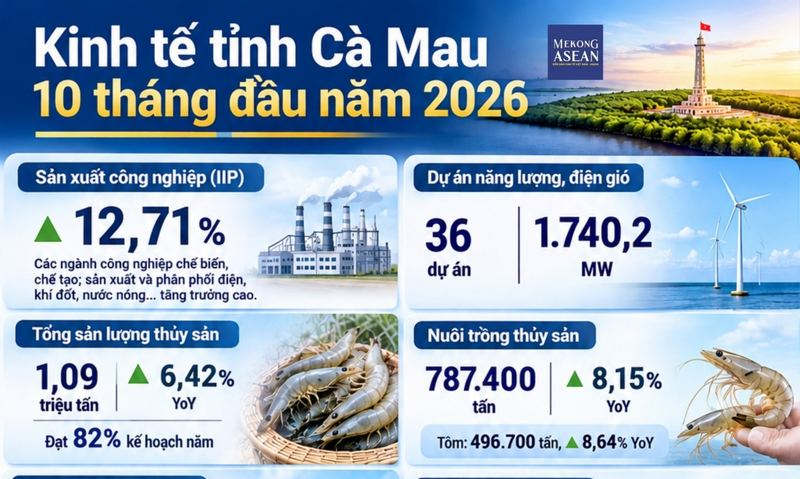
🔥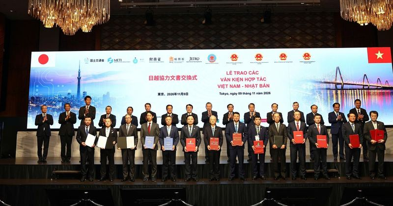
⚡Petrolimex hợp tác với ENEOS, tăng chủ động nguồn cung xăng dầu cho Việt Nam
Bí thư Đảng ủy, Chủ tịch HĐQT Petrolimex Phạm Văn Thanh (hàng đầu, thứ 3 từ phải sang) và Tổng Giám đốc ENEOS Yamaguchi Atsuji (hàng đầu, thứ 4 từ phải sang) tại lễ trao Biên bản ghi nhớ hợp tác giữa các doanh nghiệp hai
⚡
Tài chính doanh nghiệp 24/7: Petrolimex tăng cường hợp tác với ENEOS, Vinhomes tham gia dự án cảng hơn 153.500 tỷ đồng
Tài chính doanh nghiệp 24/7 ngày 9/11 ghi nhận nhiều thông tin đáng chú ý về hợp tác quốc tế, đầu tư và hoạt động của các doanh nghiệp. Petrolimex tăng cường hợp tác chiến lược với ENEOS về nguồn cung xăng dầu và phát tr
🔥
Từ những khoản vay tỷ USD đến động thái mới của Ngân hàng Nhà nước: Hệ thống ngân hàng xoay xở với bài toán vừa giảm lãi suất, vừa tăng tín dụng
TIN MỚI Nhu cầu vốn của nền kinh tế tiếp tục gia tăng trong những tháng cuối năm 2026, đặt hệ thống ngân hàng trước bài toán cân đối nguồn vốn ngày càng lớn. Trong khi tín dụng duy trì tốc độ tăng trưởng cao, khả năng hu
🔥
Thượng đỉnh Mỹ - Nga - Trung: Tổng thống Trump tiết lộ vấn đề sẽ thảo luận
(Dân trí) - Tổng thống Mỹ Donald Trump cho biết ông dự định có cuộc gặp 3 bên với Tổng thống Nga Vladimir Putin và Chủ tịch Trung Quốc Tập Cận Bình. (Từ trái sang phải) Tổng thống Mỹ Donald Trump, Tổng thống Nga Vladimir
🔥
🔥
⚡
⚡
Ông Trump nói Ukraine sẽ có ‘diện mạo khác đôi chút’, Nga lập tức đồng ý kiến
Tổng thống Mỹ Donald Trump - Ảnh: AP Trả lời phỏng vấn Đài CBS News hôm 8-11, Tổng thống Trump cho biết: “Sắp có một cuộc họp rất quan trọng diễn ra. Tôi tin rằng cuộc chiến đó sẽ kết thúc, và sẽ sớm kết thúc”. “Tôi nghĩ
🔥
Lãi suất - tỷ giá hôm nay: Lãi tiết kiệm kỳ hạn dài lên 7,3%/năm, USD giảm nhẹ
Lãi suất huy động tại nhiều ngân hàng duy trì mức 7%/năm trở lên ở các kỳ hạn dài. Trong khi đó, tỷ giá trung tâm VND/USD tiếp tục giảm, dù đồng USD vẫn ở mức cao trên thị trường quốc tế. Đến gần cuối tháng 10/2026, mặt
🔥
Doanh nghiệp Việt ký loạt hợp tác tại Hội chợ Nhập khẩu Quốc tế Trung Quốc
Gian hàng Quốc gia Việt Nam tại hội chợ thu hút đông đảo khách tham quan. Ảnh: Cục Xúc tiến thương mại Hội chợ Nhập khẩu Quốc tế Trung Quốc lần thứ 9 (CIIE 2026) diễn ra từ ngày 5 – 10/11 tại Thượng Hải, với gần 3.400 do
🔥
Phó Thủ tướng Chính phủ Nguyễn Văn Thắng: Chi phí điện và xăng dầu giảm, giá hàng hóa, dịch vụ phải giảm tương ứng
Kết luận cuộc họp Ban Chỉ đạo điều hành giá ngày 9/11/2026, Phó Thủ tướng Nguyễn Văn Thắng yêu cầu tập trung kiểm soát lạm phát những tháng cuối năm, giữ ổn định giá hàng hóa, dịch vụ do Nhà nước quản lý và kiểm tra việc
🔥
⚡
⚡
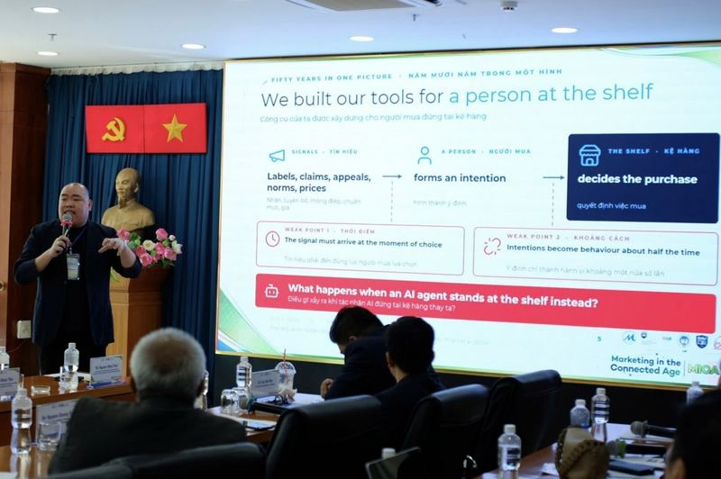
⚡Từ kệ hàng đến chọn sản phẩm: Ai quyết định tiêu dùng khi đại diện lựa chọn là AI?
Câu hỏi tưởng chừng như rất đơn giản, nhưng lại là một chủ đề được các chuyên gia về kinh tế, tài chính bàn luận rất sôi nổi tại Hội thảo khoa học quốc tế “Marketing in the Connected Age” lần thứ 5 (MICA-2026) do Trường
🔥
Jensen Huang đứng Trước nguy cơ mất chức CEO Nvidia vì scandal ngọai tình
Nóng: Jensen Huang nguy cơ mất chức CEO Nvidia vì ngoại tình Hà Thu | 09/11/2026 10:30 AM | Kinh doanh Theo dõi Cafebiz.vn trên Vụ việc thu hút sự chú ý khi các quan chức Mỹ đặt câu hỏi về mối quan hệ giữa Huang với một
🔥
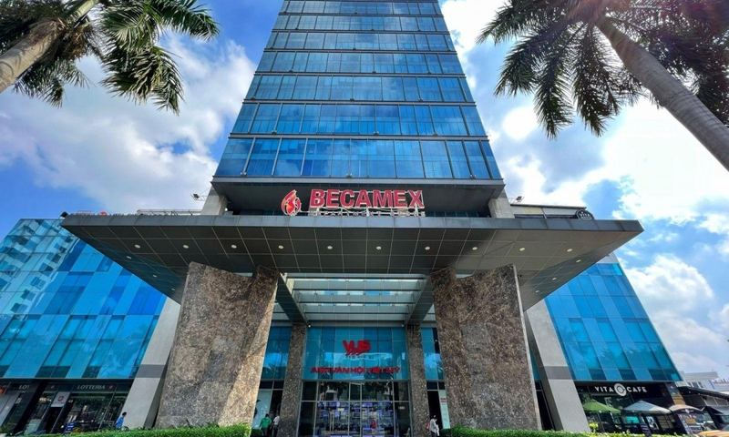
⚡
🔥
🔥
🔥
🔥
Ngoại trưởng Mỹ 'nghi CEO Nvidia quan hệ với điệp viên Trung Quốc' từ đầu năm
Ngoại trưởng Mỹ 'nghi CEO Nvidia quan hệ với điệp viên Trung Quốc' từ đầu năm Ngoại trưởng Rubio từ đầu năm đã cảnh báo về quan hệ đáng ngờ giữa CEO Nvidia với một phụ nữ nghi là gián điệp Trung Quốc, theo NY Times. New
🔥
🔥
🔥
🔥
Hàng Việt Nam khẳng định vị thế tại Hội chợ Nhập khẩu Quốc tế Trung Quốc
Facebook Twitter Lưu bài viết Bản in Copy link Với quy mô Khu gian hàng thương mại lớn nhất từ trước đến nay, đoàn doanh nghiệp Việt Nam tham gia Hội chợ Nhập khẩu Quốc tế Trung Quốc (CIIE) 2026 tại Thượng Hải (diễn ra t
🔥
🔥
🔥
🔥
🔥
Chính phủ nêu biện pháp kiểm soát dấu hiệu vi phạm khi doanh nghiệp nợ thuế
Chính phủ vừa có báo cáo tiếp thu, giải trình ý kiến đại biểu Quốc hội thảo luận về kinh tế - xã hội, trong đó có nội dung về xóa mã số thuế doanh nghiệp, hộ giải thể, xử phạt chậm kê khai. Thực hiện chủ trương của Trung
🔥
Chống hàng giả trên mạng: Định danh tài khoản bán hàng, tăng cường truy xuất nguồn gốc
Đại tá Trần Đức Đông, Chánh Văn phòng Thường trực Ban Chỉ đạo 389 quốc gia Hàng giả gây sức ép lên doanh nghiệp và niềm tin người tiêu dùng Trao đổi với Báo điện tử Chính phủ, Đại tá Trần Đức Đông, Chánh Văn phòng Thường
🔥
FPT đề xuất năm trụ cột hợp tác công nghệ chiến lược Việt Nam – Nhật Bản
FPT cùng các đối tác Nhật Bản trao hai biên bản ghi nhớ Sự kiện này được tổ chức trong khuôn khổ chuyến thăm chính thức Nhật Bản của Tổng Bí thư, Chủ tịch nước Tô Lâm và Đoàn đại biểu cấp cao Việt Nam. Theo ông Trương Gi
🔥
Việt Nam - Nhật Bản: 'Đồng sáng tạo công nghệ, kiến tạo chuỗi giá trị tương lai'
Trong khuôn khổ chuyến thăm chính thức Nhật Bản, sáng 9/11 (giờ địa phương), tại thủ đô Tokyo, Tổng Bí thư, Chủ tịch nước Tô Lâm và đoàn đại biểu cấp cao Việt Nam đã dự Diễn đàn Công tư về hợp tác kinh tế và khoa học - c
🔥
Tổng Bí thư, Chủ tịch nước Tô Lâm dự Diễn đàn Công tư về hợp tác kinh tế và khoa học-công nghệ Việt Nam-Nhật Bản
Tổng Bí thư, Chủ tịch nước Tô Lâm phát biểu tại Diễn đàn công tư về hợp tác kinh tế và khoa học công nghệ Việt Nam-Nhật Bản - Ảnh: TTXVN Phát biểu chào mừng tại diễn đàn, Bộ trưởng Bộ Tài chính Ngô Văn Tuấn nhấn mạnh diễ
🔥
Hai giải pháp của thanh niên EVNCPC đoạt giải thưởng 'Tuổi trẻ sáng tạo' toàn quốc
Trong 30 công trình, giải pháp, sản phẩm sáng tạo tiêu biểu được lựa chọn trên toàn quốc, EVNCPC có 2 giải pháp được vinh danh, bao gồm: “Xây dựng công cụ số hóa dữ liệu cao độ phục vụ tự động thiết kế trắc dọc lưới điện
🔥
Hơn một thập kỷ trước, quy mô GDP của Việt Nam từng đi sau Thái Lan 7 năm, Singapore 4 năm, khoảng cách này sẽ thay đổi ra sao trong năm nay?
Hơn một thập kỷ trước, quy mô GDP của Việt Nam từng đi sau Thái Lan 7 năm, Singapore 4 năm, khoảng cách này sẽ thay đổi ra sao trong năm nay? Theo Hoàng Nguyễn | 09/11/2026 09:53 AM | Kinh tế vĩ mô Theo dõi Cafebiz.vn tr
🔥
Bộ Tài chính đẩy mạnh truyền thông chính sách gắn với thực hiện các mục tiêu phát triển kinh tế - xã hội
Xác định quý IV/2026 là giai đoạn “nước rút”, có ý nghĩa quyết định đối với việc hoàn thành các mục tiêu phát triển kinh tế - xã hội, Đảng ủy Bộ Tài chính yêu cầu các cấp ủy trực thuộc tăng cường lãnh đạo, chỉ đạo thực h
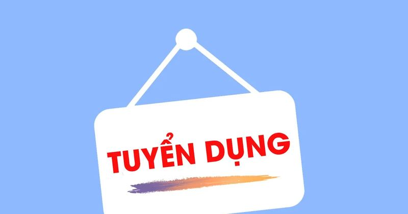
🔥Ban Quản lý dự án đầu tư xây dựng phường Thạnh Mỹ Tây thông báo tuyển dụng
Do đó, Ban Quản lý dự án đầu tư xây dựng phường Thạnh Mỹ Tây tổ chức triển khai tuyển dụng nhân sự có trình độ chuyên môn nghiệp vụ về bồi thường, giải phóng mặt bằng với các thông tin sau: 1. Đối tượng tuyển dụng - Đối
🔥
🔥
🔥
⚡
Doanh nghiệp Nhật mở rộng hợp tác năng lượng sạch, tài chính, bán lẻ tại Việt Nam
Tổng Bí thư, Chủ tịch nước Tô Lâm tiếp ông Masayoshi Fujimoto, Chủ tịch kiêm Giám đốc điều hành Tập đoàn Sojitz (Nhật Bản). Ảnh: TTXVN. Trong khuôn khổ chuyến thăm chính thức Nhật Bản, ngày 9/11, tại thủ đô Tokyo, Tổng B
⚡
Công đoàn Khoa học và Công nghệ Việt Nam phát động 3 cuộc thi thúc đẩy sáng tạo và ứng dụng AI
Hướng tới kỷ niệm 80 năm xây dựng và phát triển, Công đoàn Khoa học và Công nghệ Việt Nam phát động 3 cuộc thi dành cho đoàn viên, người lao động, tập trung vào sáng tác biểu trưng, ca khúc và ứng dụng trí tuệ nhân tạo (
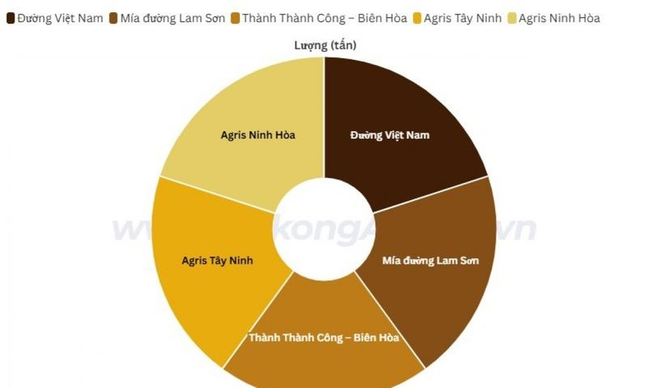
🔥
🔥
CEO Nvidia Jensen Huang thừa nhận ngoại tình: Nữ doanh nhân Alice Huang là ai?
CEO Nvidia Jensen Huang và bà Alice Huang - Ảnh: NetThunder/LinkedIn Ngày 8-11, tỉ phú người Mỹ gốc Đài Loan Jensen Huang (Hoàng Nhân Huân), 63 tuổi, giám đốc điều hành (CEO) Tập đoàn sản xuất chip Nvidia của Mỹ, thừa nh
🔥
Ngân hàng khuyến cáo người có tài khoản không sử dụng những dãy số sau làm mật khẩu, mã OTP
Ngân hàng khuyến cáo người có tài khoản không sử dụng những dãy số sau làm mật khẩu, mã OTP Theo Linh San | 09/11/2026 11:37 AM | Kinh doanh Theo dõi Cafebiz.vn trên Ngân hàng khuyến cáo người dùng nên đặt mật khẩu khó đ
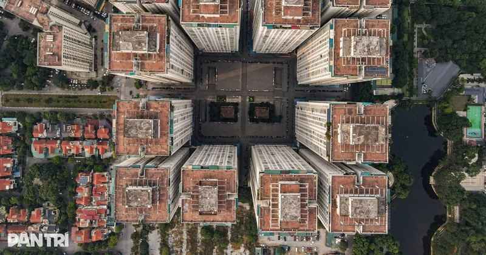
🔥
🔥
🔥
Phát hiện 1 doanh nghiệp Việt mang hơn 6.000 tấn thiết bị sang Trung Đông phục vụ siêu dự án 1,7 tỷ USD, lãi 9 tháng vượt 500% kế hoạch cả năm
TIN MỚI Hình ảnh mô phỏng dự án TA’ZIZ Methanol tại thành phố Abu Dhabi, UAE. Công ty Cổ phần Lilama 10 (mã chứng khoán: L10) đang tham gia dự án TA’ZIZ Methanol tại Các Tiểu vương quốc Ả Rập Thống nhất (UAE). Đây là dự
🔥
🔥
Một trong những tòa nhà đầu tiên tỷ phú Nguyễn Thị Phương Thảo xây tại Việt Nam: Đầu tư 800 tỷ, nay “chứa” gần 200.000 tỷ
Một trong những tòa nhà đầu tiên tỷ phú Nguyễn Thị Phương Thảo xây tại Việt Nam: Đầu tư 800 tỷ, nay “chứa” gần 200.000 tỷ Theo Yên Chi | 09/11/2026 10:26 AM | Kinh doanh Theo dõi Cafebiz.vn trên Được xây dựng từ năm 2009
🔥
🔥
Đảng Dân chủ sắp điều tra Elon Musk và Stephen Miller, ủng hộ luận tội ông Hegseth
Tổng thống Mỹ Donald Trump và Chánh văn phòng Nhà Trắng Stephen Miller - Ảnh: AFP Theo Hãng tin Reuters, trong các cuộc phỏng vấn ngày 8-11, Hạ nghị sĩ Robert Garcia và Thượng nghị sĩ Elizabeth Warren cam kết sẽ tăng cườ
🔥
Giáo hoàng Leo nhắc nhở đồng minh của Tổng thống Trump về giới hạn quyền lực
Giáo hoàng Leo gặp Tổng thống Javier Milei ở Buenos Aires ngày 8/11. (Ảnh: AP) Thông điệp này nhằm nhắn nhủ đến Tổng thống Argentina Javier Milei - đồng minh thân cận của Tổng thống Mỹ Donald Trump. Argentina là chặng dừ
🔥
🔥
🔥
Tổng thống Donald Trump tuyên bố “Cổng sắt” phong tỏa, Iran cảnh báo rắn
(Dân trí) - Tổng thống Mỹ Donald Trump tuyên bố Mỹ đã triển khai lực lượng đặc nhiệm Iron Gate (Cổng sắt) khiến hàng hóa ra vào Iran bị hạn chế. Trong khi đó, Tehran cho rằng biện pháp này sẽ thất bại. Chỉ huy CENTCOM th
🔥
CEO Nvidia Jensen Huang thừa nhận ngoại tình, xin lỗi vợ con; ông Trump lên tiếng
Alice Huang trong các ảnh chụp cùng CEO Nvidia Jensen Huang - Ảnh: NOWNews và NetThunder/LinkedIn Ngày 8-11, Tổng thống Mỹ Donald Trump gọi tỉ phú Jensen Huang là "một người tốt" và cho rằng ông nên tiếp tục giữ chức giá
🔥
🔥
🔥
🔥
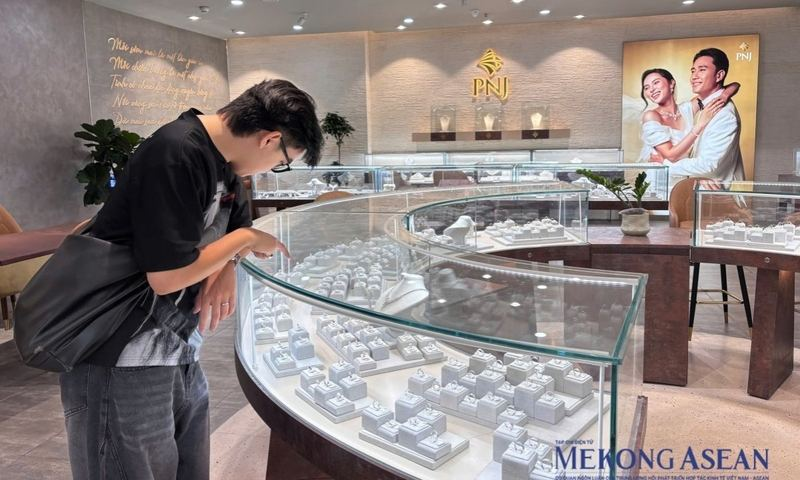
🔥
🔥
Tổng Bí thư, Chủ tịch nước Tô Lâm dự Diễn đàn Công tư về hợp tác kinh tế và khoa học - công nghệ Việt Nam - Nhật Bản
Trong khuôn khổ chuyến thăm chính thức tới Nhật Bản, sáng ngày 9/11 (giờ địa phương), tại thủ đô Tokyo, Tổng Bí thư, Chủ tịch nước Tô Lâm và Đoàn đại biểu cấp cao Việt Nam đã dự Diễn đàn Công tư về hợp tác kinh tế và kho
🔥
[Ảnh] Tổng Bí thư, Chủ tịch nước dự Diễn đàn công tư về hợp tác kinh tế và khoa học công nghệ Việt Nam-Nhật Bản
Tổng Bí thư, Chủ tịch nước Tô Lâm phát biểu tại Diễn đàn công tư về hợp tác kinh tế và khoa học công nghệ Việt Nam-Nhật Bản. Đại biểu phát biểu. Tổng Bí thư, Chủ tịch nước Tô Lâm chứng kiến lễ trao các văn kiện hợp tác g
🔥
Tổng Bí thư, Chủ tịch nước Tô Lâm dự Diễn đàn Công tư về hợp tác kinh tế và khoa học-công nghệ Việt Nam-Nhật Bản
Facebook Twitter Lưu bài viết Bản in Copy link Theo đặc phái viên TTXVN, trong khuôn khổ chuyến thăm chính thức tới Nhật Bản, sáng 9/11 (giờ địa phương), tại thủ đô Tokyo, Tổng Bí thư, Chủ tịch nước Tô Lâm và Đoàn đại bi
🔥
🔥
Phát minh của Trung Quốc làm rung chuyển ngành công nghệ: Thiết bị "đọc não" chính xác đến 94%, gõ chữ bằng suy nghĩ trong nhiều giờ
Phát minh của Trung Quốc làm rung chuyển ngành công nghệ: Thiết bị "đọc não" chính xác đến 94%, gõ chữ bằng suy nghĩ trong nhiều giờ Theo Thiên Di | 09/11/2026 11:10 AM | Công nghệ Theo dõi Cafebiz.vn trên Các nhà khoa h
🔥
DNSE và Dragon Capital đưa công nghệ và quản lý đầu tư tới DNSE Future Tech Summit 2026
DNSE Future Tech Summit 2026 với chủ đề “Market IQ: Level Up Your Investment” sẽ tiếp tục là điểm hẹn kết nối cộng đồng tài chính và công nghệ. Chương trình năm nay hướng đến giúp nhà đầu tư nâng cao năng lực trong phân
🔥
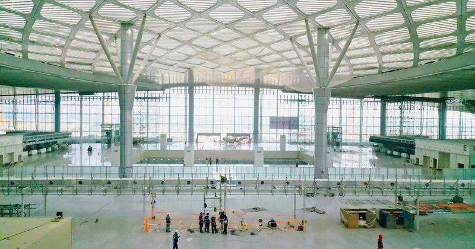
🔥Doanh thu 94 tỷ USD/năm, 'ông lớn' logistics toàn cầu nói: Chắc chắn xuất hiện tại sân bay Long Thành và Gia Bình
Doanh thu 94 tỷ USD/năm, 'ông lớn' logistics toàn cầu nói: Chắc chắn xuất hiện tại sân bay Long Thành và Gia Bình Minh Ngọc - Quảng Định | 09/11/2026 10:52 AM | Kinh doanh Theo dõi Cafebiz.vn trên Đại diện FedEx tại khu
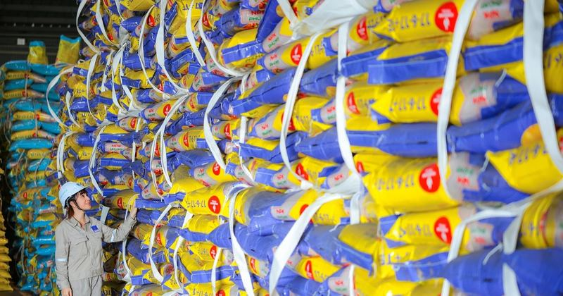
🔥
🔥
Phát hiện thiết bị bay Trung Quốc dài bằng toà nhà 8 tầng, đang di chuyển bất ngờ lơ lửng ở độ cao 4.000 m, thực hiện nhiệm vụ đặc biệt
Phát hiện thiết bị bay Trung Quốc dài bằng toà nhà 8 tầng, đang di chuyển bất ngờ lơ lửng ở độ cao 4.000 m, thực hiện nhiệm vụ đặc biệt Theo Vu Lam | 09/11/2026 10:19 AM | Công nghệ Theo dõi Cafebiz.vn trên Thiết bị bay
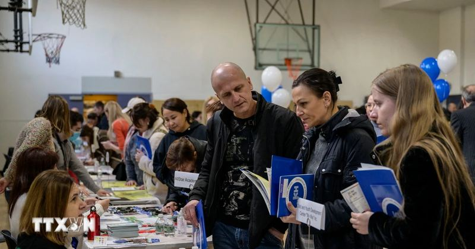
🔥Australia đối mặt với làn sóng cắt giảm nhân sự lớn nhất kể từ sau COVID-19
Facebook Twitter Lưu bài viết Bản in Copy link Australia đang đối mặt với làn sóng cắt giảm nhân sự lớn nhất kể từ đại dịch COVID-19, trong bối cảnh các doanh nghiệp chịu áp lực kiểm soát chi phí, tăng trưởng kinh tế chậ
🔥
Thị trường sập sâu, "phiên bản nữ của Warren Buffett" tuyên bố: Càng nhiều người sợ hãi, tôi càng yên tâm
Thị trường sập sâu, "phiên bản nữ của Warren Buffett" tuyên bố: Càng nhiều người sợ hãi, tôi càng yên tâm Theo Hồng Duy | 09/11/2026 09:32 AM | Kinh doanh Theo dõi Cafebiz.vn trên Giữa lúc thị trường chứng khoán Mỹ liên
🔥
🔥
🔥
🔥
Tổng giám đốc TPBank: Muốn hút vốn quốc tế, ngân hàng phải nâng chuẩn quản trị
Trong bối cảnh nhu cầu vốn của nền kinh tế ngày càng lớn, việc tiếp cận nguồn vốn quốc tế đang mở thêm cơ hội cho các ngân hàng Việt Nam. Theo ông Nguyễn Hưng - Tổng giám đốc Ngân hàng TMCP Tiên Phong (TPBank), để tận dụ
🔥
Xây dựng hệ sinh thái liên kết cho doanh nghiệp trong chuỗi giá trị toàn cầu
Tại Kỳ họp thứ 2, Quốc hội khóa XVI , các đại biểu đánh giá cao thành tựu nổi bật về thương mại và thu hút đầu tư 10 tháng năm 2026, với kim ngạch xuất nhập khẩu lần đầu tiên vượt ngưỡng 1.000 tỷ USD, vốn FDI đăng ký đạt
🔥
⚡
⚡
Tổng Bí thư, Chủ tịch nước Tô Lâm phát biểu chính sách tại Quốc hội Nhật Bản
Phát biểu chào mừng, Chủ tịch Hạ viện Nhật Bản Mori Eisuke nhấn mạnh, Nhật Bản và Việt Nam có quan hệ hữu nghị truyền thống, được xây dựng trên nền tảng tin cậy chính trị sâu sắc, sự tương đồng về văn hóa, lịch sử và sự
⚡
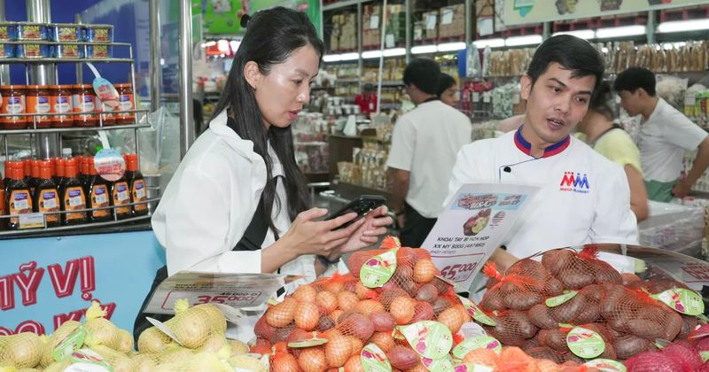
⚡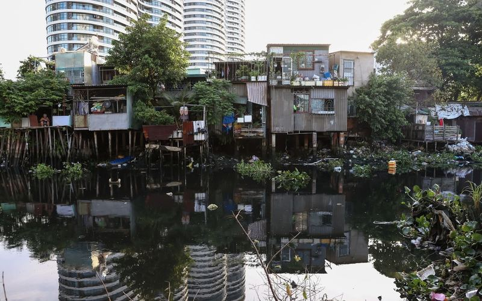
⚡Chi hơn 8.500 tỷ đồng, TP.HCM muốn giải quyết con rạch đang ô nhiễm trầm trọng
Chi hơn 8.500 tỷ đồng, TP.HCM muốn giải quyết con rạch đang ô nhiễm trầm trọng Quảng Định | 09/11/2026 19:03 PM | Kinh tế vĩ mô Theo dõi Cafebiz.vn trên Dự án cải tạo môi trường, xây dựng hạ tầng rạch Văn Thánh được kỳ v
⚡
Tổng Bí thư, Chủ tịch nước Tô Lâm phát biểu chính sách tại Quốc hội Nhật Bản
Tổng Bí thư, Chủ tịch nước Tô Lâm phát biểu chính sách tại Quốc hội Nhật Bản - Ảnh: TTXVN Phát biểu chào mừng, Chủ tịch Hạ viện Nhật Bản Mori Eisuke nhấn mạnh Nhật Bản và Việt Nam có mối quan hệ hữu nghị truyền thống, dự
⚡
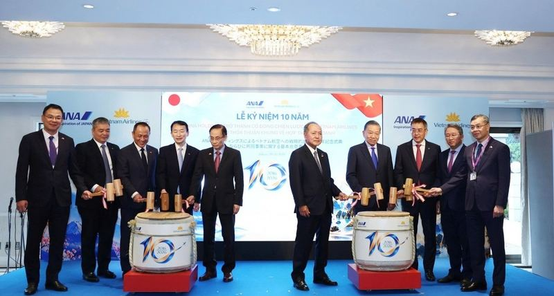
🔥
🔥
🔥
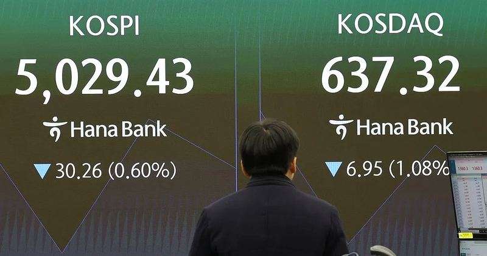
🔥
🔥
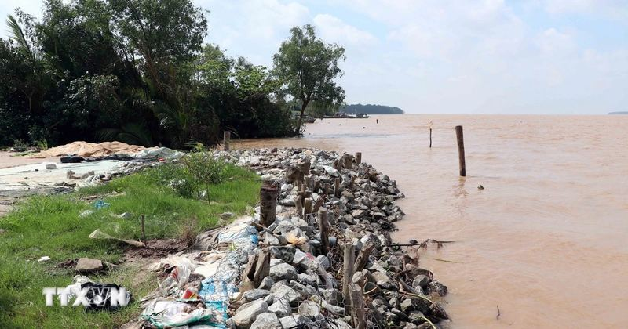
🔥
🔥
 🔥
🔥
Diễn biến mới nhất về tuyến đường 6 tỷ USD do liên danh Vingroup đầu tư: Rộng 16 làn xe, kết nối trung tâm Hà Nội với siêu sân vận động lớn nhất thế giới của tỷ phú Phạm Nhật Vượng
TIN MỚI Sáng 5/11, UBND xã Phú Xuyên tổ chức hội nghị tuyên truyền, đối thoại với các hộ dân có đất thuộc diện thu hồi để thực hiện dự án theo phương thức đối tác công tư (PPP). Trong số 161 trường hợp còn vướng mắc, có
🔥
🔥
Ông Trump nói về vụ CEO Nvidia ngoại tình, tuyên bố trở lại mạnh mẽ sau bầu cử
Theo hãng thông tấn Axios, Tổng thống Trump ngày 8/11 khẳng định tỷ phú công nghệ Jensen Huang là một người đáng kính trọng, đồng thời cho rằng ông Huang nên tiếp tục giữ chức tổng giám đốc điều hành (CEO) của tập đoàn N
🔥
🔥
Không để sự thận trọng quá mức kìm hãm hiệu quả đầu tư Quỹ Bảo hiểm xã hội
Trao đổi với Tạp chí Kinh tế - Tài chính, đại biểu Vũ Văn Tiến, Đại biểu Quốc hội TP. Hải Phòng ví Quỹ Bảo hiểm xã hội như “bình ôxy” của hàng triệu người lao động, nhấn mạnh yêu cầu bảo đảm an toàn nguồn vốn, đồng thời
🔥
🔥
⚡
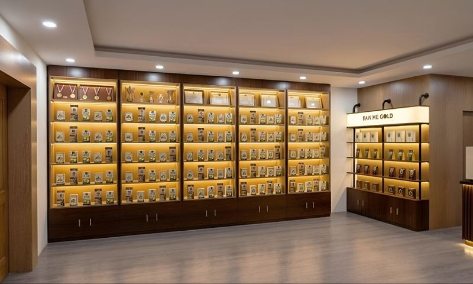
🔥
🔥
🔥
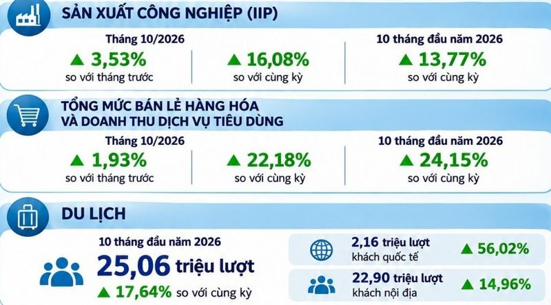
🔥
🔥
🔥
🔥
Từ 15/11, AI tự động chuyển tiền trên 10 triệu đồng thuộc nhóm rủi ro cao
TIN MỚI Hệ thống AI tự động thực hiện giao dịch thanh toán vượt một số ngưỡng giá trị nhất định sẽ được xếp vào nhóm rủi ro cao. Quy định cũng yêu cầu ngân hàng tăng cường giám sát, bảo đảm khách hàng có quyền kiểm soát
🔥
Phát hiện 14 người nước ngoài nghi lừa đảo qua sàn chứng khoán ảo ở TP.HCM
TIN MỚI Ngày 8/11, thông tin từ Công an TP.HCM cho biết, trong đợt cao điểm rà soát người nước ngoài cư trú bất hợp pháp, hoạt động trái phép trên địa bàn, lực lượng chức năng phát hiện một nhóm người nước ngoài nghi tổ
🔥
Đảng Dân chủ mở mặt trận điều tra, Tổng thống Trump tuyên bố sẽ trở lại mạnh mẽ
Tổng thống Mỹ Donald Trump và Chánh văn phòng Nhà Trắng Stephen Miller. (Ảnh: AP) Kết quả thất bại nặng nề trong cuộc bỏ phiếu ngày 3/11 khiến Tổng thống Trump bị hạn chế đáng kể khi bước vào 2 năm cuối nhiệm kỳ. Kết quả
🔥
Quốc hội tiến hành phiên chất vấn và trả lời chất vấn: Tập trung vào lĩnh tài chính và khoa học công nghệ
Trách nhiệm trả lời chính tại phiên chất vấn là Bộ trưởng Bộ Tài chính Ngô Văn Tuấn và Bộ trưởng Bộ Khoa học và Công nghệ Vũ Hải Quân. Trong đó, dự kiến Bộ trưởng Bộ Tài chính Ngô Văn Tuấn sẽ trả lời chất vấn về 4 nhóm v
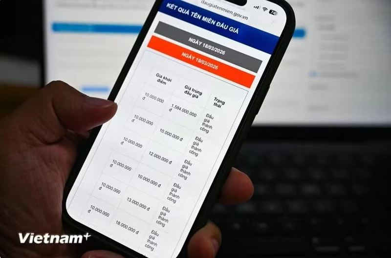
🔥
🔥
 🔥
🔥
🔥
🔥
Ông Trump nói gì khi đối thủ của ông Netanyahu được giao thành lập chính phủ?
"Họ có quan điểm chính sách rất giống nhau… [ông Eisenkot] đã nói những điều rất tốt đẹp về tôi. Ông ấy nói rằng mình yêu mến Trump , nhưng… tôi vẫn chưa rõ tình hình cụ thể ra sao. Chắc chắn đây là một cuộc cạnh tranh g
🔥
Đội U19 du đấu Trung Quốc, cả 4 đội tuyển của Việt Nam đều bận rộn trong tháng 11
Lịch thi đấu Panda Cup 2026 Tháng 11 mở ra với nhịp đập bận rộn hiếm thấy của bóng đá Việt Nam khi cả bốn cấp độ đội tuyển - gồm đội tuyển Quốc gia (ĐTQG), U23, U19 và U17 - đồng loạt bước vào các chiến dịch tranh tài qu
🔥
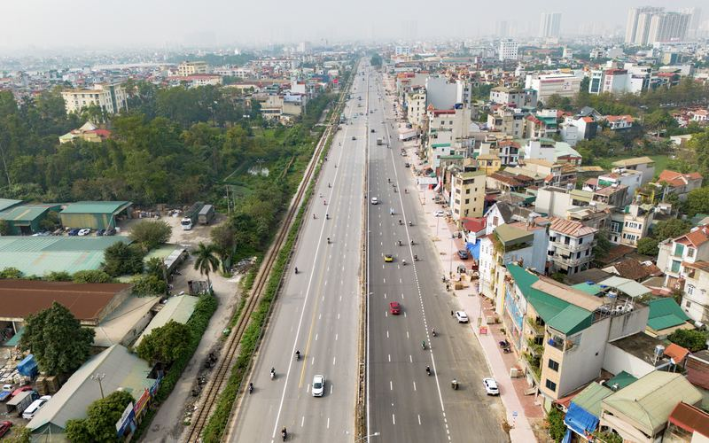
🔥Diễn biến mới nhất tuyến đường 6 tỷ USD: Rộng 16 làn xe, kết nối trung tâm Hà Nội với siêu sân vận động lớn nhất thế giới của tỷ phú Phạm Nhật Vượng
Diễn biến mới nhất tuyến đường 6 tỷ USD: Rộng 16 làn xe, kết nối trung tâm Hà Nội với siêu sân vận động lớn nhất thế giới của tỷ phú Phạm Nhật Vượng Theo Văn Đoan | 09/11/2026 10:34 AM | Kinh doanh Theo dõi Cafebiz.vn tr
🔥
🔥
🔥
Sau thất bại, phe Cộng hòa quay lại Điện Capitol với danh sách dài cần hoàn thành
Điện Capitol tại thủ đô Washington D.C, Mỹ ảnh: reuters Từ nay cho đến thời điểm quốc hội khóa mới bắt đầu, đảng Cộng hòa đang nỗ lực tận dụng cơ hội trong những ngày cuối cùng nắm quyền để thúc đẩy những chính sách theo
🔥
Giá vàng tăng 1 triệu đồng sáng đầu tuần, SJC giao dịch ở ngưỡng 142 triệu đồng
Facebook Twitter Lưu bài viết Bản in Copy link Mở cửa phiên giao dịch đầu tuần (9/11), giá vàng trong nước bật tăng 1 triệu đồng/lượng, trong khi tỷ giá trung tâm do Ngân hàng Nhà nước công bố giảm 5 đồng. Vào thời điểm
🔥
Vụ tai nạn ở đường bao biển khiến cháu bé tử vong: 2 tài xế ô tô bị khởi tố
Ngày 9/11, Công an TP Quảng Ninh cho biết vừa ra quyết định khởi tố vụ án, khởi tố bị can đối với Nguyễn Thanh Tùng (SN 1993, trú phường Mông Dương) và Nguyễn Quang Tùng (SN 1967, trú tại phường Cửa Ông) về tội “Vi phạm
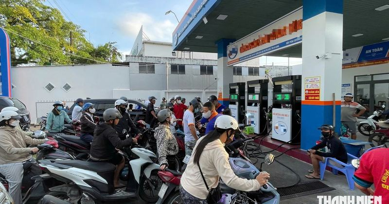
🔥Người dân Phú Quốc 'chầu chực' ở cây xăng, mỗi xe chỉ được đổ 50.000 đồng
Sáng 9.11, theo ghi nhận của Thanh Niên , hàng loạt cây xăng ở khu vực Dương Đông, đặc khu Phú Quốc (tỉnh An Giang) phải treo bảng "hết xăng, còn dầu". Nhiều người dân chạy xe máy đến đổ xăng phải buồn bã quay về khi thấ
 🔥
🔥
🔥
🔥
Tin tức quốc tế sáng 9.11: Ông Trump lên tiếng sau bê bối ngoại tình của CEO Nvidia
Thông tin chấn động về CEO Nvidia Jensen Huang Hãng chip Nvidia vừa cho biết họ "đang tiến hành một cuộc điều tra độc lập trước những thông tin gần đây cho rằng nhà sáng lập kiêm CEO Jensen Huang đã trở thành mục tiêu củ
🔥
🔥
Tuần lễ AI 2026 tại Israel tập trung vào ứng dụng trí tuệ nhân tạo và những thách thức an ninh
Theo phóng viên TTXVN tại Israel, ngày 9/11, Tuần lễ Trí tuệ nhân tạo (AI Week) 2026 bắt đầu tại Đại học Tel Aviv, quy tụ các chuyên gia, nhà nghiên cứu, đại diện doanh nghiệp, cơ quan chính phủ, quân đội và giới học thu
🔥
🔥
Tổng thống Trump nói đùa về việc bổ nhiệm ông trùm đấu võ UFC làm người phát ngôn Nhà Trắng
Tổng thống Mỹ Donald Trump và CEO UFC Dana White là bạn thân. (Ảnh: Reuters) Theo Tổng thống Trump, ông White “rất thích ý tưởng” trở thành Thư ký Báo chí, nhưng ông nhấn mạnh: “Tôi chỉ đùa về vị trí đó”. Ngày 7/11, Tổng
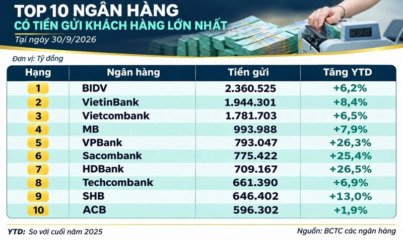
🔥Cuộc đua tiền gửi: MB áp mốc triệu tỷ đồng, nhóm ngân hàng tư nhân tăng tốc
Theo thống kê từ báo cáo tài chính quý 3/2026 của 28 ngân hàng, tổng tiền gửi khách hàng tại ngày 30/9 đạt hơn 14,38 triệu tỷ đồng, tăng 10,6% so với đầu năm (YTD). Trong đó, 26 ngân hàng tăng trưởng tiền gửi, còn Eximba
🔥
🔥
CEO Nvidia Jensen Huang thừa nhận ngoại tình với một phụ nữ người Trung Quốc
Ông Huang dự một sự kiện ở Washington D.C. hôm 8.10 ẢNH: AP Hãng AFP ngày 9.11 đưa tin hội đồng quản trị hãng chip Nvidia thông báo đã mở cuộc điều tra độc lập về thông tin cho rằng CEO kiêm nhà đồng sáng lập Jensen Huan
🔥
🔥
🔥
Tổng Bí thư, Chủ tịch nước Tô Lâm tiếp lãnh đạo các tập đoàn, doanh nghiệp Nhật Bản
Tổng Bí thư, Chủ tịch nước Tô Lâm tiếp ông Masayoshi Fujimoto, Chủ tịch kiêm Giám đốc điều hành Tập đoàn Sojitz (Nhật Bản) - Ảnh: TTXVN Tiếp ông Masayoshi Fujimoto, Chủ tịch kiêm Giám đốc điều hành Tập đoàn Sojitz, Tổng
🔥
Xây dựng Khu kinh tế cửa khẩu Đồng Đăng - Lạng Sơn thành trung tâm logistics và thương mại biên mậu
Hiện nay Khu kinh tế (KKT) cửa khẩu Đồng Đăng - Lạng Sơn đã có bước phát triển đáng khích lệ, trong đó việc Tỉnh kiện toàn chiến lược quy hoạch dài hạn và đẩy mạnh phát triển hệ thống kết cấu hạ tầng đã giúp bộ mặt KKT n
🔥
De Heus - Hùng Nhơn đẩy nhanh tiến độ chuỗi dự án trị giá 18.300 tỷ đồng
Thường trực Tỉnh ủy Tây Ninh làm việc với Tập đoàn Hoàng gia De Heus, Tập đoàn Hùng Nhơn Việt Nam và Heineken Việt Nam - Ảnh: chinhphu.vn/LT Ngày 9/11, tại buổi làm việc với Thường trực Tỉnh ủy Tây Ninh, Tập đoàn Hoàng g
🔥
Tổng Bí thư, Chủ tịch nước Tô Lâm dự Lễ kỷ niệm 10 năm hợp tác chiến lược Vietnam Airlines và ANA Holdings
Tổng Bí thư, Chủ tịch nước Tô Lâm và các đại biểu dự Kỷ niệm 10 năm ANA Holdings trở thành cổ đông chiến lược của Vietnam Airlines và chứng kiến trao thỏa thuận khung về hợp tác kinh doanh - Ảnh: TTXVN Tháng 5/2016, Viet
🔥
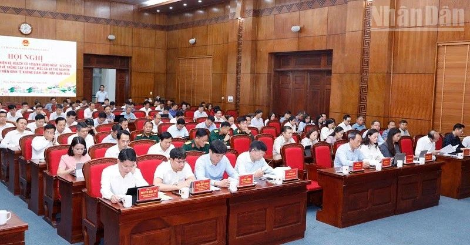
🔥Chủ tịch Ủy ban nhân dân tỉnh Điện Biên yêu cầu đẩy nhanh giải ngân vốn ngân sách Nhà nước
Công điện số 10081/CĐ-UBND ngày 7/11/2026 nêu rõ: Theo số liệu tổng hợp đến hết ngày 5/11/2026, lũy kế giải ngân chi đầu tư phát triển của Điện Biên đạt hơn 4.514 tỷ đồng (bằng 71,54% kế hoạch vốn thực tế giao); chi thườ
🔥
🔥
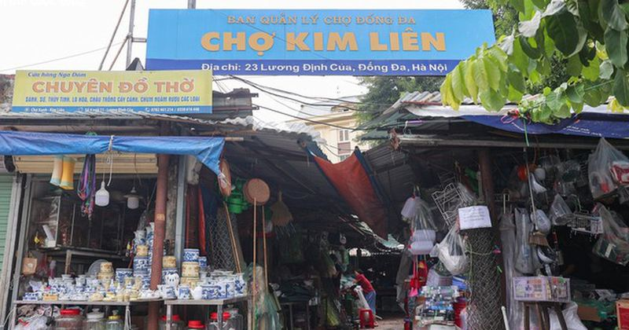
🔥Phường ở Hà Nội lấy ý kiến người dân về quy hoạch dự án xây dựng chợ Kim Liên
TIN MỚI UBND phường Kim Liên (Hà Nội) thông báo về việc niêm yết công khai và lấy ý kiến của cơ quan, tổ chức, cá nhân và cộng đồng dân cư đối với quy hoạch tổng mặt bằng tỷ lệ 1/500 dự án đầu tư xây dựng chợ Kim Liên (s
🔥
🔥
🔥
Người đàn ông Ai Cập trọn đời sưu tập ấn phẩm cũ lưu giữ ký ức thế giới Arab
Facebook Twitter Lưu bài viết Bản in Copy link Hai lần bán vàng của vợ để mua sách và các ấn phẩm xưa, Mohamed Sadeq, một người Ai Cập sinh sống tại Các Tiểu vương quốc Arab Thống nhất (UAE), đã dành nhiều tâm huyết xây
🔥
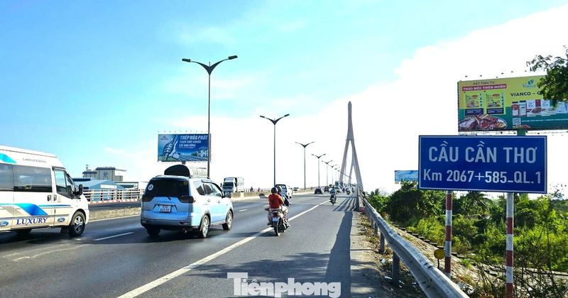
🔥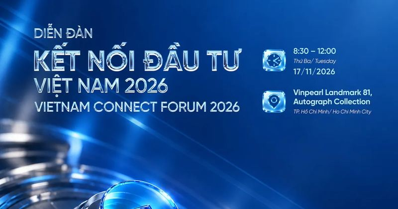
🔥VietinBank tổ chức Vietnam Connect Forum 2026 – Diễn đàn đầu tư và kết nối doanh nghiệp FDI
VietinBank tổ chức Diễn đàn đầu tư và kết nối doanh nghiệp FDI Đầu tư vào Việt Nam – Cơ hội không chỉ nằm ở dòng vốn Việt Nam đang trở thành một điểm đến quan trọng trong chiến lược đầu tư và tái cấu trúc chuỗi cung ứng
🔥
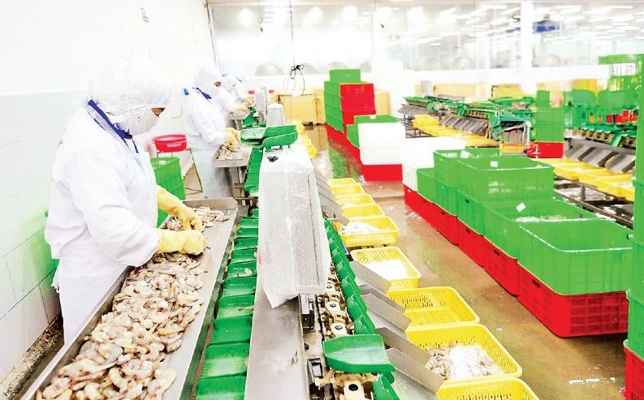
🔥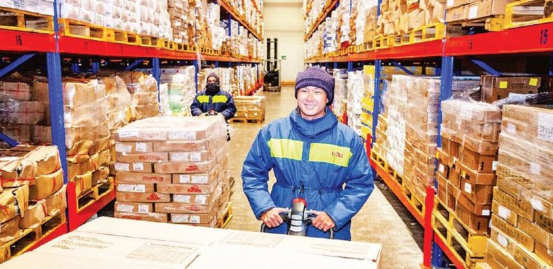
🔥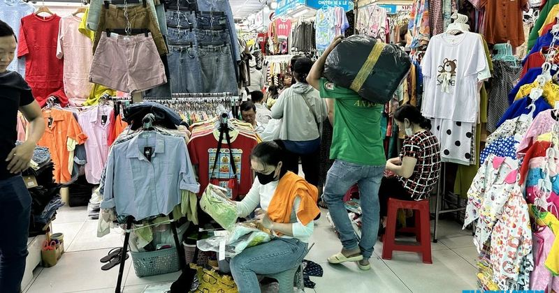
🔥
⚡
Bộ trưởng Bộ Y tế: Minh bạch giá thuốc, thiết bị y tế, tránh tăng giá, đẩy giá
Bộ trưởng Bộ Y tế Đào Hồng Lan tiếp thu, giải trình các ý kiến đại biểu Quốc hội nêu - Ảnh: chinhphu.vn/Nhật Bắc Cân nhắc kỹ đề xuất cấm thuốc lá theo thế hệ Bộ trưởng Đào Hồng Lan cho biết, việc sửa đổi Luật Phòng, chốn
⚡
⚡
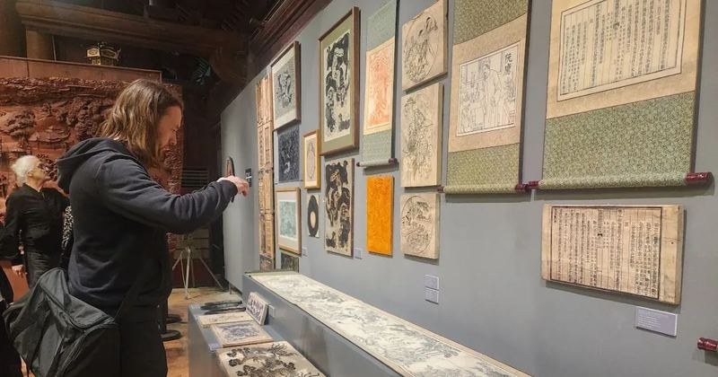
⚡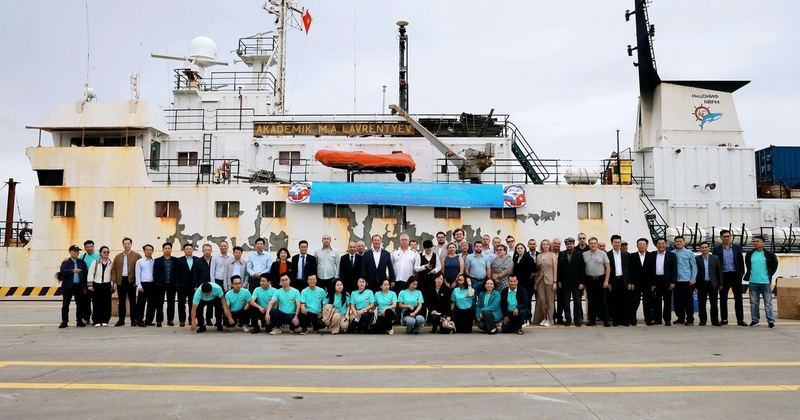
⚡
⚡
Chương trình hành động của Chính phủ phát triển các vùng và tổ chức không gian phát triển quốc gia
Phát triển hệ thống đô thị hiện đại và các cực tăng trưởng của vùng Mục đích của Chương trình nhằm cụ thể hóa các mục tiêu, nhiệm vụ và giải pháp tại Nghị quyết số 27-NQ/TW nhằm phát huy hơn nữa tiềm năng, lợi thế của từ
⚡
Phó Thủ tướng Thường trực Phạm Gia Túc: Hoàn thiện cơ chế phối hợp để tháo gỡ các dự án tồn đọng, kéo dài
Phó Thủ tướng Thường trực Phạm Gia Túc phát biểu khai mạc cuộc họp - Ảnh: chinhphu.vn/Phương Nguyên Phó Thủ tướng Thường trực Phạm Gia Túc nêu rõ, thời gian qua, Chính phủ đã triển khai nhiều cơ chế, chính sách nhằm tháo
⚡
Chùm ảnh: Lễ đón Tổng Bí thư, Chủ tịch nước Tô Lâm thăm chính thức Nhật Bản
Thủ tướng Takaichi chủ trì Lễ đón Tổng Bí thư, Chủ tịch nước Tô Lâm và Phu nhân Ngô Phương Ly thăm chính thức Nhật Bản - Ảnh: TTXVN Tổng Bí thư, Chủ tịch nước Tô Lâm và Thủ tướng Nhật Bản Takaichi nghe quân nhạc cử Quốc
⚡
🔥
Tổng Bí thư, Chủ tịch nước Tô Lâm tọa đàm với các doanh nghiệp lớn của Nhật Bản
Tham dự tọa đàm, về phía Nhật Bản có Chủ tịch Phòng Thương mại và Công nghiệp Nhật Bản Kobayashi Ken; Chủ tịch Liên đoàn các tổ chức kinh tế Nhật Bản (Keidanren) Tsutsui Yoshinobu; đại diện một số tập đoàn, doanh nghiệp
🔥
Bị từ chối thưởng KPI vì đã nghỉ việc, cựu Giám đốc một công ty chứng khoán khởi kiện đòi lại 10 tỷ đồng: Tòa phán quyết thế nào?
Bị từ chối thưởng KPI vì đã nghỉ việc, cựu Giám đốc một công ty chứng khoán khởi kiện đòi lại 10 tỷ đồng: Tòa phán quyết thế nào? Theo Thu Thủy | 09/11/2026 11:49 AM | Kinh doanh Theo dõi Cafebiz.vn trên Kết quả thưởng K
🔥
🔥
🔥
Tòa nhà chọc trời của Tập đoàn dầu khí Saudi Arabia trúng đòn tấn công của Houthi
Tòa nhà Aramco Tower bị hư hại sau cuộc tấn công - Ảnh: BHASKAR ENGLISH Bộ Năng lượng Saudi Arabia cho biết tòa nhà đã bị hư hại sau vụ “tấn công bất thành”. Mảnh vỡ rơi xuống gây “hư hại nhẹ”, nhưng không có thương vong
🔥
🔥
Hàn Quốc hướng tới làm chủ công nghệ lõi robot và dư địa hợp tác với Việt Nam
Facebook Twitter Lưu bài viết Bản in Copy link Hàn Quốc đang đẩy mạnh chuyển dịch từ tự động hóa công nghiệp sang phát triển robot trí tuệ nhân tạo (AI) và AI vật lý (Physical AI), với trọng tâm là làm chủ công nghệ lõi,
🔥
Cổng Kê khai, tổng hợp vị trí việc làm: Đã có hơn 11.500 cơ quan, đơn vị kê khai và đồng bộ dữ liệu
Facebook Twitter Lưu bài viết Bản in Copy link Thực hiện Hướng dẫn số 07-HD/BTCTW của Ban Tổ chức Trung ương về rà soát, hoàn thiện cơ sở dữ liệu chức năng, nhiệm vụ, vị trí việc làm và nhu cầu nhân lực trong hệ thống ch
🔥
CEO nổi tiếng thừa nhận ngoại tình, công ty có thể mất 3,5 triệu tỷ vốn hóa
TIN MỚI Sáng thứ 2 ngày 9/11 (theo giờ Việt Nam), khi thị trường chứng khoán Mỹ chưa mở cửa trở lại, cổ phiếu NVIDIA bất ngờ giảm mạnh hơn 3% trong phiên giao dịch ngoài giờ (Overnight). Đây có thể là phản ứng của nhà đầ
🔥
🔥
🔥
CEO Jensen Huang ngoại tình với nữ doanh nhân Trung Quốc, Nvidia điều tra khẩn
CEO Jensen Huang ngoại tình với nữ doanh nhân Trung Quốc, Nvidia điều tra khẩn Theo Kông Anh | 09/11/2026 09:06 AM | Công nghệ Theo dõi Cafebiz.vn trên Nvidia mở cuộc điều tra đối với CEO Jensen Huang về những vấn đề liê
🔥
🔥
🔥
🔥
🔥
🔥
🔥
Chuyên gia chỉ tên một nhóm cổ phiếu định giá rẻ có thể "dẫn sóng" thị trường thời gian tới
TIN MỚI Sau giai đoạn biến động mạnh của thị trường chứng khoán, dòng tiền được dự báo sẽ có xu hướng chọn lọc hơn, thay vì lan tỏa đồng loạt trên diện rộng. Trong bối cảnh đó, kết quả kinh doanh và triển vọng tăng trưởn
🔥
Dự báo nhịp giảm sâu sắp tới là cơ hội “gom hàng”, Vietcap gọi tên 2 cổ phiếu đáng chú ý
TIN MỚI Trong báo cáo chiến lược thị trường tháng 11/2026, Chứng khoán Vietcap nhận định VN-Index vẫn đang trong giai đoạn giằng co khi dòng tiền chưa đủ mạnh để xác lập xu hướng tăng bền vững. Tuy nhiên, những yếu tố nề
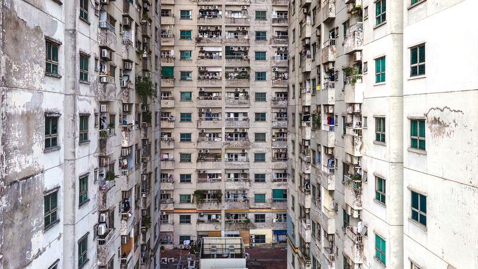
🔥
⚡
🔥
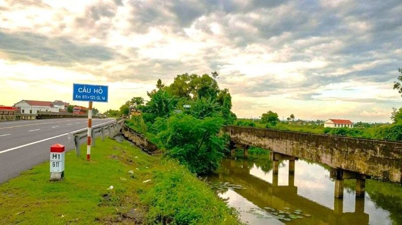
🔥Sớm xây dựng bia tưởng niệm 14 thanh niên xung phong B4-C906 Ninh Bình hy sinh tại Cầu Hồ, tỉnh Quảng Trị
Theo báo cáo của Ủy ban nhân dân xã Quảng Trạch, từ các tài liệu lịch sử đã được rà soát, đối chiếu và chỉnh lý, ngày 21/11/1970, hai máy bay chiến đấu của đế quốc Mỹ từ hướng biển tiến vào khu vực Cảnh Dương rồi tiếp tụ
🔥
🔥
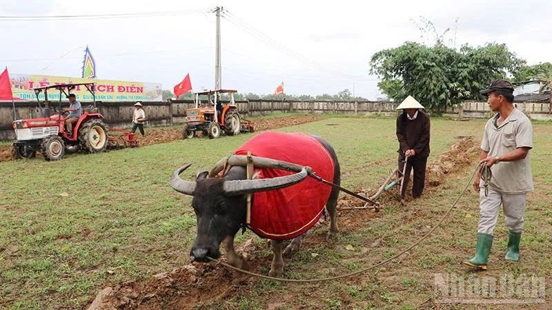
🔥
🔥
🔥
🔥
🔥
🔥
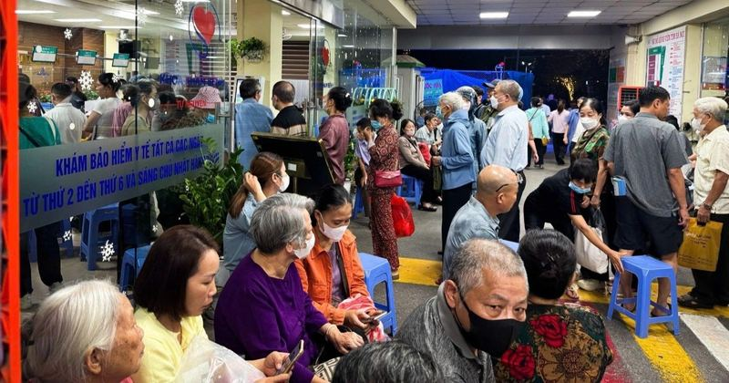
🔥
🔥
🔥
🔥
CEO NVIDIA Jensen Huang ngoại tình: Tập đoàn 4.500 tỷ USD ảnh hưởng ra sao?
Cổ phiếu NVIDIA chao đảo sau bê bối của CEO Jensen Huang , CEO kiêm đồng sáng lập NVIDIA, đã gửi lời xin lỗi gia đình và thừa nhận không chung thủy với vợ trong thông điệp nội bộ gửi nhân viên hôm Chủ nhật. “Tôi đã không
🔥
🔥
Cựu giám đốc chi nhánh SeABank duyệt cho vay bằng gần 2.000 tấn thép khống rồi bỏ trốn
Tòa án nhân dân TP Hà Nội mở phiên sơ thẩm xét xử vắng mặt cựu giám đốc chi nhánh SeABank - Ảnh: GIANG LONG Ngày 9-11, Tòa án nhân dân TP Hà Nội mở phiên tòa xét xử vắng mặt hai bị cáo Lê Anh Tâm (45 tuổi, cựu
🔥
🔥
HLV tuyển U23 Thái Lan: Chúng tôi có quá ít thời gian chuẩn bị cho Gia Lai VTV Cup 2026
HLV Thawatchai Damrong-Ongtrakul phát biểu trước giờ sang Việt Nam tranh tài Khó khăn đầu tiên là việc các cầu thủ vừa hoàn tất các vòng đấu ở Thai League nhưng đã phải chuẩn bị lên đường sang Việt Nam tham dự giải, với
🔥
'Sao Mai 2026:' Nhạc sỹ Dương Cầm nói 'không', Hoàng Thu Hà vẫn vào chung kết
Facebook Twitter Lưu bài viết Bản in Copy link Liveshow 6 “Sao Mai 2026” tối 8/11 diễn ra đầy gay cấn. Sau phần thi của các thí sinh, 5 cái tên lần lượt được xướng lên, chỉ còn Hoàng Thu Hà đứng lại trên sân khấu, chờ qu
🔥
🔥
Dự báo mưa lớn nhất trong năm tới 500 mm, Quảng Ngãi yêu cầu không được chủ quan
Ngày 9/11, Chủ tịch UBND tỉnh Quảng Ngãi ra công điện yêu cầu các sở, ngành, địa phương khẩn trương triển khai các biện pháp ứng phó với mưa lớn, lũ, ngập lụt, lũ quét và sạt lở đất. Theo Đài Khí tượng Thủy văn tỉnh Quản
🔥
🔥
🔥
Gió lớn quật đổ cây xanh, cổng trên phố, Đắk Lắk cảnh báo mưa lớn dồn dập
Sáng 9/11, ông Nguyễn Công Thành - Chủ tịch UBND phường Tuy Hòa, tỉnh Đắk Lắk, cho biết, tối 8/11, gió lớn khiến một số cây xanh và cổng trên đường Điện Biên Phủ bị đổ ngã. Sự việc không gây thiệt hại về người và tài sản
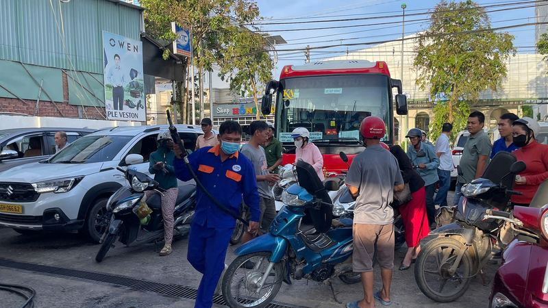
🔥
🔥
🔥
🔥
🔥
🔥
🔥
Bảo vệ thực chất quyền lợi người lao động khi doanh nghiệp chậm, trốn đóng bảo hiểm xã hội
Tán thành nhiều nội dung tiếp thu, chỉnh lý trong dự thảo Luật sửa đổi, bổ sung một số điều của Luật Bảo hiểm xã hội, các đại biểu Quốc hội đề nghị tiếp tục hoàn thiện cơ chế bảo vệ người lao động trước tình trạng chậm đ
🔥
🔥
🔥
🔥
Trân quý trong từng thanh âm: TPBank tri ân khách hàng bằng một đêm Vienna Concert giữa lòng Hà Nội
TIN MỚI Những giai điệu vượt thời gian của Mozart, Johann Strauss II và Franz Lehár trở thành lời cảm ơn trang trọng mà ngân hàng gửi tới những người đã cùng mình đi qua một hành trình dài của niềm tin và gắn bó. Một đêm
🔥
🔥
TPS ra mắt TP-BondX: Giải pháp đầu tư trái phiếu linh hoạt theo nhu cầu dòng tiền
TIN MỚI Với thông điệp "Rõ cơ hội - Hiểu rủi ro - Linh hoạt dòng tiền", TP-BondX mang đến trải nghiệm giao dịch trái phiếu thuận tiện, minh bạch và linh hoạt, giúp nhà đầu tư chủ động nhận diện cơ hội, đánh giá rủi ro và
🔥
🔥
🔥
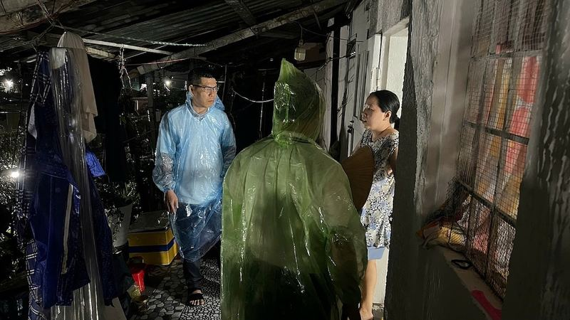
🔥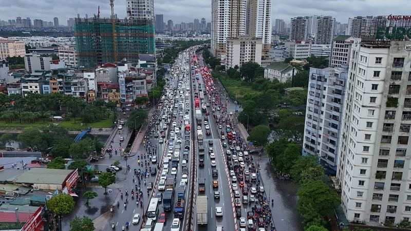
🔥
🔥
🔥
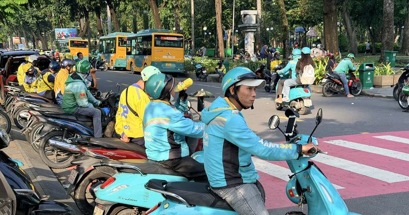
🔥Bệ đỡ an sinh cho lao động tự do - Bài 1: Nhiều hệ lụy từ khoảng trống an sinh
LTS: Hàng triệu lao động tự do đang góp sức vào hoạt động kinh tế - xã hội, nhưng không ít người vẫn đứng ngoài hoặc chỉ được bảo vệ một phần bởi hệ thống an sinh. Thu nhập bấp bênh, việc làm thiếu ổn định, khó tiếp cận
🔥
🔥
🔥
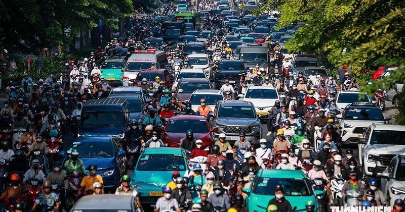
🔥
🔥
🔥
🔥
🔥
🔥
Học thành công của Hàn Quốc, Singapore: Việt Nam có thể trở thành con hổ châu Á mới bằng cách nào?
Học thành công của Hàn Quốc, Singapore: Việt Nam có thể trở thành con hổ châu Á mới bằng cách nào? Theo Đại Phú | 09/11/2026 17:19 PM | Kinh tế vĩ mô Theo dõi Cafebiz.vn trên Việt Nam học được gì từ thành công của Hàn Qu
Quy định mới về trình tự, thủ tục giám sát hoạt động phòng, chống rửa tiền
Quy định mới về trình tự, thủ tục giám sát hoạt động phòng, chống rửa tiền Thông tư số 57/2026/TT-NHNN quy định về trình tự, thủ tục giám sát hoạt động phòng, chống rửa tiền đối với các đối tượng báo cáo theo quy định củ
Siết quản lý kinh doanh thuốc lá trên môi trường số, ngăn hàng giả, hàng nhập lậu
Thảo luận về dự án Luật sửa đổi, bổ sung một số điều của Luật Phòng, chống tác hại của thuốc lá chiều ngày 9/11, nhiều đại biểu Quốc hội đề nghị tăng cường kiểm soát nguồn cung, ngăn chặn thuốc lá giả, thuốc lá nhập lậu
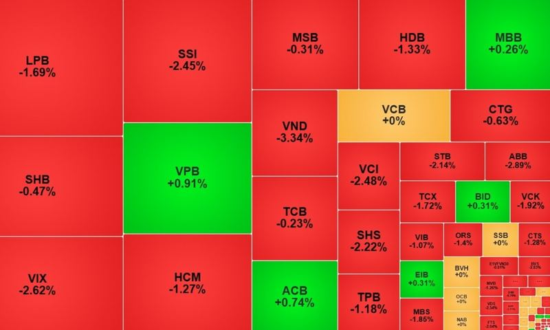
Phó Thủ tướng Thường trực Phạm Gia Túc: Thúc đẩy hợp tác Việt Nam - Singapore đi vào chiều sâu, thực chất, hiệu quả
Phó Thủ tướng Thường trực Chính phủ Phạm Gia Túc tiếp Đại sứ Singapore tại Việt Nam Rajpal Singh - Ảnh: chinhphu.vn/Phương Nguyên Tại cuộc tiếp, Phó Thủ tướng Thường trực Phạm Gia Túc bày tỏ vui mừng gặp Đại sứ Rajpal Si
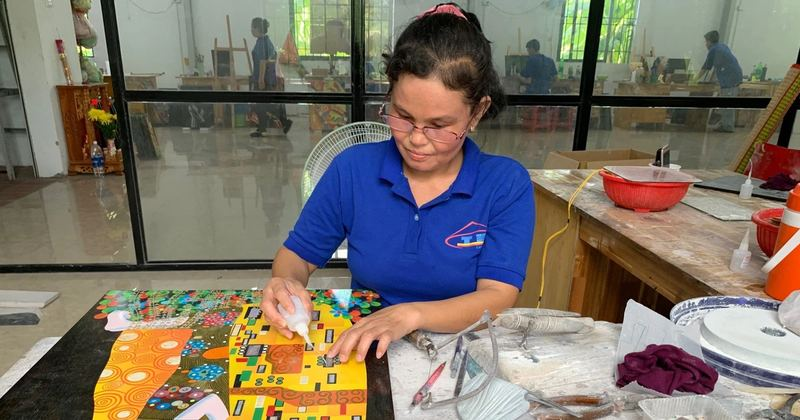
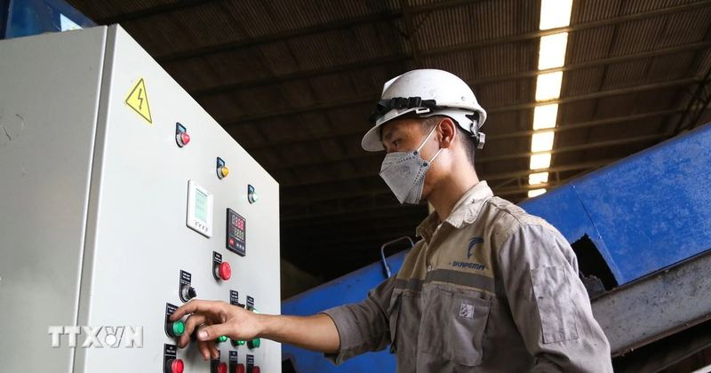
Tây Ninh thí điểm không gian sáng tạo cộng đồng, đưa đổi mới sáng tạo đến cơ sở
Facebook Twitter Lưu bài viết Bản in Copy link Tây Ninh dự kiến thí điểm 6 không gian sáng tạo cộng đồng tại các xã, phường trong giai đoạn 2026-2027, gắn hoạt động đổi mới sáng tạo với thế mạnh và nhu cầu thực tiễn của
HDBank được chấp thuận sửa đổi giấy phép, nâng vốn điều lệ lên hơn 65.000 tỷ đồng
HDB: Giá hiện tại Thay đổi Xem hồ sơ doanh nghiệp TIN MỚI Theo công bố thông tin bất thường ngày 5/11, HDBank cho biết đã nhận được Quyết định số 2433/QĐ-NHNN của NHNN về việc sửa đổi nội dung vốn điều lệ tại Giấy phép t
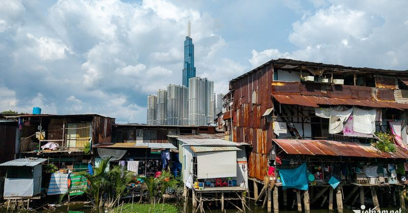
Miền Tây sắp có cây cầu dây văng 2 tầng hơn 27.000 tỷ đồng, thiết kế đặc biệt với 6 làn cao tốc phía trên, đường sắt bên dưới
TIN MỚI Phối cảnh cầu Cần Thơ 2. Chủ tịch UBND TP Cần Thơ vừa ký ban hành công văn về việc triển khai Quyết định của Bộ Xây dựng phê duyệt chủ trương đầu tư Dự án đầu tư xây dựng cầu Cần Thơ 2 và đường dẫn hai đầu cầu. T
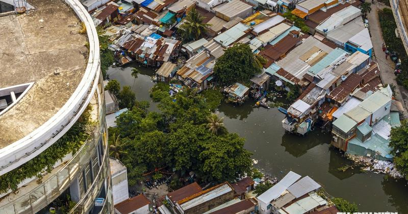
Sun Group chuẩn bị mở bán hàng trăm căn nhà ở xã hội tại thành phố đáng sống bậc nhất Việt Nam
TIN MỚI Sở Xây dựng TP Đà Nẵng vừa công khai thông tin tiếp nhận hồ sơ đăng ký mua nhà ở xã hội tại dự án Khu dân cư An Hòa Sun Home do Công ty cổ phần Tập đoàn Mặt Trời (Sun Group) làm chủ đầu tư. Trong đợt tiếp nhận hồ
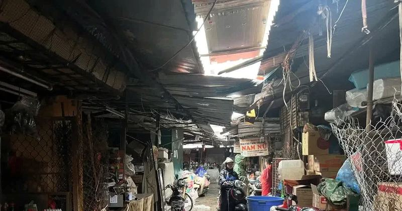
Tập đoàn công nghiệp 60 năm tuổi, doanh thu gần 150.000 tỷ đồng chọn Việt Nam sản xuất vật liệu công nghệ cao
Tập đoàn công nghiệp 60 năm tuổi, doanh thu gần 150.000 tỷ đồng chọn Việt Nam sản xuất vật liệu công nghệ cao Theo Anh Khôi | 09/11/2026 09:39 AM | Kinh doanh Theo dõi Cafebiz.vn trên Một tập đoàn công nghiệp có lịch sử
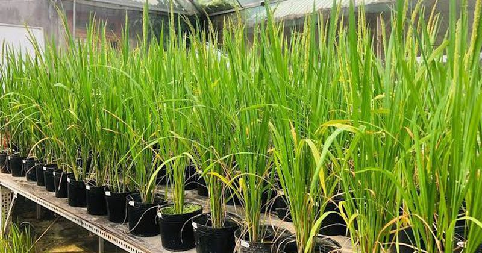
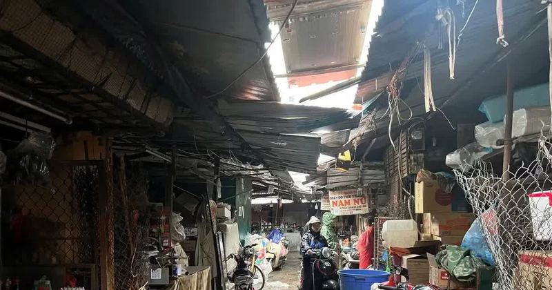
Siêu dự án gần 100.000 tỷ đồng của liên danh Sunshine Group tại Hà Nội có diễn biến mới đáng chú ý
TIN MỚI Mới đây nhất, UBND TP Hà Nội tiếp tục ban hành Quyết định số 6050/QĐ-UBND ngày 2/l1/2026 về việc giao, cho thuê đất tại xã Phúc Thịnh và xã Thiên Lộc cho liên danh Handico - Sunshine Group - Big Gain - Thái Nam L
Tăng tốc hoàn thiện dự án Trellia Vista: Bảo chứng giá trị thực và đóng góp vào mục tiêu phát triển hạ tầng đô thị Nam Sài Gòn
Diện mạo Trellia Vista đã thành hình khi các hạng mục mặt ngoài và kết cấu bên trong tòa tháp dần về đích Năng lực thực thi và cam kết tài sản minh bạch Theo các chuyên gia kinh tế, một trong những điểm nghẽn lớn của thị
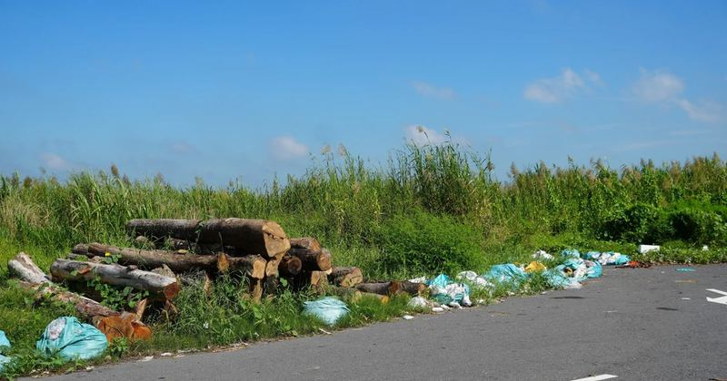
Hà Nội tăng tốc quý IV, quyết tâm hoàn thành mục tiêu tăng trưởng năm 2026
Kinh tế Hà Nội 10 tháng năm 2026 ghi nhận nhiều điểm sáng trong sản xuất công nghiệp, đầu tư công, thương mại và du lịch. GĐể hoàn thành mục tiêu tăng trưởng GRDP từ 11% trở lên, Thành phố tăng tốc trong quý IV, tập trun
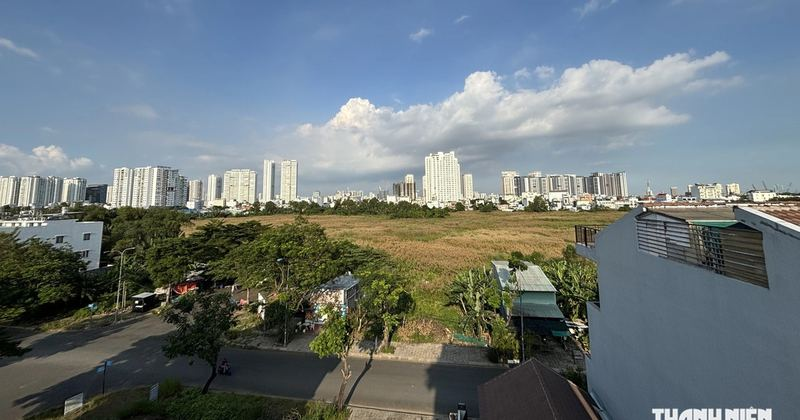
⚡
Việt Nam - Nhật Bản đồng hành trong chặng đường phát triển mới, tạo thêm cơ hội vươn lên
Trong khuôn khổ chuyến thăm chính thức Nhật Bản, chiều ngày 9/11, tại thủ đô Tokyo, Tổng Bí thư, Chủ tịch nước Tô Lâm và Phu nhân cùng Đoàn đại biểu cấp cao Việt Nam đã đến Quốc hội Nhật Bản. Tại đây, Tổng Bí thư, Chủ tị
⚡
Thứ trưởng Bộ Dân tộc và Tôn giáo thăm, tặng quà đồng bào Chăm ở Lâm Đồng
Tại buổi thăm, Thứ trưởng Thường trực Bộ Dân tộc và Tôn giáo Nguyễn Hoài Anh đánh giá cao những đóng góp của đồng bào Chăm trong việc gìn giữ, phát huy bản sắc văn hóa dân tộc. Đặc biệt, các vị chức sắc, người có uy tín
⚡
⚡
⚡
Phát biểu chính sách của Tổng Bí thư, Chủ tịch nước Tô Lâm tại Quốc hội Nhật Bản
Tổng Bí thư, Chủ tịch nước Tô Lâm phát biểu chính sách tại Quốc hội Nhật Bản - Ảnh: TTXVN Trong khuôn khổ chuyến thăm chính thức Nhật Bản, chiều 9/11 (giờ địa phương), tại thủ đô Tokyo, Tổng Bí thư, Chủ tịch nước Tô Lâm
⚡
Chủ tịch Hội đồng Liên bang, Quốc hội Liên bang Nga sắp thăm chính thức Việt Nam
Chủ tịch Quốc hội Trần Thanh Mẫn hội kiến Chủ tịch Hội đồng Liên bang, Quốc hội Liên bang Nga Valentina Matviyenko nhân dịp tham dự Đại hội đồng Liên minh Nghị viện thế giới lần thứ 152, tháng 4-2026 tại Thổ Nhĩ Kỳ. Ảnh:
⚡
VIFC-HCMC làm việc với đối tác Nhật Bản, thúc đẩy thị trường trái phiếu quốc tế
VIFC-HCMC làm việc cùng MUMSS (Ảnh: VIFC-HCMC cung cấp). Tại buổi làm việc , các bên tập trung trao đổi về các phương thức huy động vốn trên thị trường tài chính quốc tế, phát hành trái phiếu quốc tế; kinh nghiệm của các
⚡
Tổng Bí thư, Chủ tịch nước Tô Lâm: Sự phát triển của Việt Nam mở thêm cơ hội cho Nhật Bản
Tổng Bí thư, Chủ tịch nước Tô Lâm và Phu nhân Ngô Phương Ly trước Quốc hội Nhật Bản ngày 9-11 - Ảnh: NGUYỄN KHÁNH Ngày 9-11, trong khuôn khổ chuyến thăm chính thức Nhật Bản, Tổng Bí thư, Chủ tịch nước Tô Lâm và Phu nhân
Phân bổ ngân sách trung ương năm 2027: Hơn 757.000 tỷ đồng dành cho đầu tư phát triển
Chiều ngày 9/11, với 100% đại biểu tham gia biểu quyết tán thành, Quốc hội thông qua Nghị quyết về phương án phân bổ ngân sách trung ương năm 2027, trong đó bố trí 757.200 tỷ đồng cho chi đầu tư phát triển, 980.970 tỷ đồ
Nguyên giảng viên Đại học Bách khoa giờ làm ông chủ địa ốc, sở hữu loạt dự án bất động sản tại thành phố giàu nhất Việt Nam, nay vẫn mạnh tay chi nghìn tỷ gom thêm dự án
TIN MỚI Sinh năm 1977, ông Lê Như Thạch từng ấp ủ ước mơ trở thành kỹ sư xây dựng, tự tay góp sức kiến tạo để xây "những ngôi nhà cao cao mãi". Năm 1995, ông thi vào ngành Xây dựng tại Đại học Bách khoa TP.HCM, bắt đầu h
Sáng 9/11: Giá bạc trong nước và thế giới đồng loạt tăng nhẹ trong phiên đầu tuần
Trong khi đó, các doanh nghiệp trong nước cũng điều chỉnh giá bạc tăng nhẹ, tính theo cả 2 chiều mua-bán. Cụ thể, tại thời điểm 9 giờ 51 phút ngày 9/11, theo Vietnam Metals Exchange (VME), giá bạc 99.99 (chưa phí, thuế V
Nhiều dự án giao thông trọng điểm tại Thái Nguyên dự kiến hoàn thành tháng 12
Facebook Twitter Lưu bài viết Bản in Copy link Đến hết tháng 10/2026, Ban Quản lý dự án đầu tư xây dựng công trình giao thông và nông nghiệp Thái Nguyên - chủ đầu tư nhiều dự án, công trình trọng điểm trên địa bàn tỉnh T
Khẩn trương xử lý đất đá sạt lở trên đường Hồ Chí Minh qua tỉnh Thanh Hóa
Facebook Twitter Lưu bài viết Bản in Copy link Do ảnh hưởng của mưa lớn tối 8/11, tại Km594+850-Km594+870 (TT) đường Hồ Chí Minh qua địa phận tỉnh Thanh Hóa xảy ra tình trạng sạt lở taluy dương, đất đá tràn xuống mặt đườ
Phát hiện cựu học sinh THPT Kim Liên từng quyết làm công nhân dù lớn lên trong gia đình trí thức, khởi nghiệp bằng việc bán thiết bị ổn áp: Nay là chủ doanh nghiệp nổi tiếng Việt Nam, vốn hàng trăm tỷ đồng
Phát hiện cựu học sinh THPT Kim Liên từng quyết làm công nhân dù lớn lên trong gia đình trí thức, khởi nghiệp bằng việc bán thiết bị ổn áp: Nay là chủ doanh nghiệp nổi tiếng Việt Nam, vốn hàng trăm tỷ đồng Theo Minh Ánh
Có doanh nghiệp trả 70 triệu đồng/tháng để hút thợ xây, nhà thầu khác bất lực nhìn người lao động rời đi
Có doanh nghiệp trả 70 triệu đồng/tháng để hút thợ xây, nhà thầu khác bất lực nhìn người lao động rời đi Lệ Chi | 09/11/2026 10:35 AM | Kinh doanh Theo dõi Cafebiz.vn trên Nhu cầu xây dựng tăng mạnh khiến các nhà thầu bư
Sửa Luật Bảo hiểm xã hội: Không để quyền lợi người tham gia bị ảnh hưởng
Sáng 9/11, Quốc hội thảo luận ở hội trường về dự án Luật sửa đổi, bổ sung một số điều của Luật Bảo hiểm xã hội. Bảo vệ quyền lợi người lao động, kiểm soát chặt hoạt động đầu tư quỹ Góp ý dự thảo luật, đại biểu Nguyễn Văn
Lịch chốt quyền trả cổ tức trong tuần từ ngày 9/11-13/11, tỷ lệ cao nhất 65%
TIN MỚI Theo thống kê trên các sàn giao dịch chứng khoán, có khoảng 26 doanh nghiệp sẽ chốt quyền chi trả cổ tức cho cổ đông bằng tiền mặt hoặc cổ phiếu trong tuần này từ ngày 9/11/2026 - 13/11/2026, mức cao nhất là 65%
Chứng khoán tuần mới: VN-Index có thể lùi về 1.700 điểm trước khi hồi phục?
Các công ty chứng khoán dự báo VN-Index tiếp tục rung lắc trong vùng 1.700-1.780 điểm tuần mới - Ảnh: QUANG ĐỊNH Thị trường chứng khoán Việt Nam khép lại tuần giao dịch từ 2-11 đến 6-11 với nhiều biến động. Sau khi có lú
Quốc hội chốt dự toán ngân sách năm 2027: Thu hơn 3,334 triệu tỷ đồng, bội chi 4,5% GDP
Sáng nay (9/11), với 100% đại biểu Quốc hội tham gia biểu quyết tán thành, Quốc hội thông qua Nghị quyết về dự toán ngân sách nhà nước năm 2027. Quốc hội biểu quyết thông qua Nghị quyết về dự toán ngân sách nhà nước năm
Nhiều người từng khỏe mạnh bỗng 'nhớ nhớ, quên quên', Bệnh viện Tâm thần TP.HCM khám 25.000 lượt/tháng
Bà H. đưa con trai H.T.V. (45 tuổi, ngụ TP.HCM) tái khám, vì thường xuyên có hành vi tấn công bà khi lên cơn động kinh sau khi bị chấn thương sọ não do tai nạn giao thông - Ảnh: XUÂN MAI Ghi nhận bên trong phòng khám tại
Tỷ phú Jensen Huang thừa nhận ngoại tình, Nvidia điều tra nghi vấn gián điệp
CEO Jensen Huang của Nvidia. (Ảnh: Reuters) Trong thông điệp gửi tới nhân viên, ông Huang thừa nhận đã không chung thủy với vợ và tuyên bố ông nhận “toàn bộ trách nhiệm” về hành động của mình. Nvidia khẳng định CEO này c
Phó Thủ tướng Hồ Quốc Dũng tiếp Chủ tịch kiêm Tổng Giám đốc Tập đoàn Ericsson
Phó Thủ tướng Hồ Quốc Dũng tiếp ông Per Narvinger, Chủ tịch kiêm Tổng Giám đốc Tập đoàn Ericsson (Thụy Điển) - Ảnh: chinhphu.vn/Gia Huy Cùng dự có Thượng tướng Lê Văn Tuyến, Thứ trưởng Bộ Công an; Trung tướng Tào Đức Thắ
Tổng Bí thư, Chủ tịch nước tiếp lãnh đạo một số tập đoàn lớn của Nhật Bản
Tổng Bí thư, Chủ tịch nước Tô Lâm tiếp lãnh đạo một số tập đoàn lớn của Nhật Bản. Ảnh: TTXVN. Theo đặc phái viên TTXVN, trong khuôn khổ chuyến thăm chính thức Nhật Bản, sáng 9/11 (giờ địa phương), tại Tokyo, Tổng Bí thư,
Hội người Việt Nam tại Pháp: 50 năm tiếp nối truyền thống đoàn kết, hướng về quê hương
Được thành lập năm 1976, Hội người Việt Nam tại Pháp là tổ chức hội đoàn lâu đời nhất, có quy mô rộng lớn và giữ vai trò nòng cốt trong phong trào yêu nước của cộng đồng người Việt Nam tại châu Âu. Trải qua hành trình 50
MU hòa Aston Villa 4-4: Ngọn lửa hồi sinh hay tia sáng trước khi lụi tắt?
Tinh thần chưa hoàn toàn lụi tắt Trận hòa 4-4 tại Old Trafford là kiểu kết quả khiến người ta vừa muốn ăn mừng, vừa không thể yên tâm. MU có quyền tự hào về tinh thần chiến đấu, nhưng Carrick khó coi đó là bằng chứng của
Hà Nội yêu cầu rà soát, giảm giá cước vận tải khi chi phí nhiên liệu giảm
Thực hiện chỉ đạo của Phó Chủ tịch Ủy ban nhân dân thành phố Hà Nội Nguyễn Xuân Lưu tại cuộc họp ngày 30/10/2026 về tăng cường công tác quản lý, điều hành giá trong những tháng cuối năm, gắn với mục tiêu kiểm soát lạm ph
Dàn cảnh mua hàng, giả vờ đưa 500.000 đồng để lừa tiền thối ở xã Xuân Thới Sơn
Nguyễn Trọng Nghĩa và Nguyễn Thị Ngọc Tuyết tại cơ quan công an - Ảnh: Công an cung cấp Ngày 8-11, Công an xã Xuân Thới Sơn (TP.HCM) cho biết đang phối hợp Phòng Cảnh sát hình sự (PC02) Công an TP.HCM điều tra, làm rõ hà
Từ Nghị quyết 71-NQ/TW đến yêu cầu đổi mới toàn diện đào tạo nhân lực nghề
Facebook Twitter Lưu bài viết Bản in Copy link Để nâng cao chất lượng nguồn nhân lực đáp ứng yêu cầu đột phá chiến lược theo tinh thần Nghị quyết số 71-NQ/TW của Bộ Chính trị về đột phá phát triển giáo dục và đào tạo, gi
Đi khám vì rong kinh, nữ bệnh nhân được phát hiện u xơ tử cung nặng hơn 2kg
(Dân trí) - Nữ bệnh nhân bị rong kinh kéo dài dẫn đến thiếu máu. Đến bệnh viện khám, các bác sĩ phát hiện khối u xơ tử cung choán hết vùng hạ vị, chèn ép niệu quản và thận phải của bệnh nhân. Ngày 9/11, đại diện bệnh việ
Tập trung tháo gỡ khó khăn về xây dựng trường lớp và tuyển dụng giáo viên
Đồng chí Nguyễn Văn Chiến, Phó Trưởng Ban Tuyên giáo Trung ương chủ trì buổi làm việc với UBND TPHCM về triển khai thực hiện Nghị quyết số 71 của Bộ Chính trị và chuyên đề về công tác giáo dục phổ thông trên địa bàn TPHC
Tiết học đặc biệt bên giường bệnh và lời chào cuối dành cho cô gái 18 tuổi
Mới đây, truyền thông Trung Quốc đưa tin một nữ sinh 18 tuổi, tên Bội Bội (đã thay đổi tên), học tại Trường Thực nghiệm trực thuộc Viện Nghiên cứu Giáo dục Kim Sa, thành phố Tất Tiết, tỉnh Quý Châu, đã qua đời sau thời g
Lãnh Thanh có hành động gây sốc, chính thức dừng chân tại The Face Vietnam
(Dân trí) - Trong tập 6 The Face Vietnam 2026, Lãnh Thanh khiến các huấn luyện viên và thí sinh bất ngờ khi chủ động nhường cơ hội đi tiếp cho đồng đội. Tập 6 The Face Vietnam 2026 mang đến thử thách catwalk liên hoàn vớ
Mr Pips xin “kết hôn trong tù”, bố mẹ đề nghị giám định tâm thần cho con
Bản tin 60s ngày 9/11/2026 có những thông tin đáng chú ý sau: Mr Pips xin “kết hôn trong tù”, bố mẹ liên tục đề nghị giám định tâm thần cho con. Không khí lạnh tràn về, Bắc Bộ rét 13 độ C, miền Trung mưa lớn. 10 người nh
Công an xác minh người trả giá đất nông thôn gần 1,5 tỷ đồng/m² ở Ninh Bình
TIN MỚI Sáng 9/11, trao đổi với Tiền Phong, đại diện UBND xã Lý Nhân (tỉnh Ninh Bình) cho biết, địa phương đã chỉ đạo Công an xã phối hợp với Phòng Kinh tế và đơn vị tổ chức đấu giá kiểm tra, xác minh việc 11 lô đất được
'Bóng hình Macondo': Cuộc đối thoại giữa văn chương, âm nhạc và nhiếp ảnh
Facebook Twitter Lưu bài viết Bản in Copy link Lấy cảm hứng từ tiểu thuyết “Trăm năm cô đơn” của nhà văn Colombia Gabriel García Márquez, chương trình “Bóng hình Macondo” (Reflejos de Macondo) sẽ diễn ra trong hai ngày 9
Sun Group chuẩn bị mở bán hàng trăm căn nhà ở xã hội tại thành phố đáng sống bậc nhất Việt Nam
Sun Group chuẩn bị mở bán hàng trăm căn nhà ở xã hội tại thành phố đáng sống bậc nhất Việt Nam Theo Thế Anh | 09/11/2026 10:52 AM | Kinh doanh Theo dõi Cafebiz.vn trên Từ ngày 2/12/2026 đến ngày 5/1/2027, Sun Group sẽ ti
Thắp hy vọng tìm hài cốt liệt sĩ Lượm - nguyên mẫu 'chú bé loắt choắt' trong thơ Tố Hữu
Ngày 9/11, lãnh đạo phường Đô Vinh, tỉnh Khánh Hòa cho biết, cuối tuần qua, Công an tỉnh Khánh Hòa phối hợp với các đơn vị thuộc Bộ Công an tổ chức lấy mẫu ADN thân nhân để phục vụ công tác tìm kiếm, xác định hài cốt liệ
Co.opmart giảm giá nhiều mặt hàng đến 50%, tăng ưu đãi dịp tri ân 30 năm
Khách hàng nhận phiếu mua hàng trị giá 30.000 đồng tại Co.opmart trong chương trình ưu đãi mua sắm. Ảnh: MINH XUÂN Co.opmart tăng ưu đãi hàng thiết yếu Theo Saigon Co.op, lượng khách đến tham quan, mua sắm tại hệ thống t
Người phụ nữ ở Singapore và lý do Nvidia phải điều tra chính CEO của mình
Người phụ nữ ở Singapore và lý do Nvidia phải điều tra chính CEO của mình PV | 09/11/2026 10:00 AM | Sống Theo dõi Cafebiz.vn trên 10 ngày từ bài báo của New York Times tới lá thư xin lỗi gửi toàn công ty. TL;DR 3 ý chín
Lực lượng Houthi tuyên bố tấn công khu tài chính tại thủ đô của Saudi Arabia
Facebook Twitter Lưu bài viết Bản in Copy link Lực lượng Houthi tại Yemen ngày 8/11 tuyên bố đã tiến hành các cuộc tấn công nhằm vào một số mục tiêu tại Saudi Arabia, trong đó có khu tài chính ở thủ đô Riyadh, sân bay Ri
Khởi tố 35 bị can trong chuyên án ma túy xuyên quốc gia do 'Hiệp đen' cầm đầu
Ngày 9.11, Cơ quan Cảnh sát điều tra Công an thành phố Đồng Nai, cho biết đã khởi tố 35 bị can trong chuyên án ma túy xuyên quốc gia do "Hiệp đen" - đối tượng đang bị truy nã đặc biệt nguy hiểm cầm đầu. Hoàng Trần Hiệp h
Bác sĩ trẻ Viện Tim TP.HCM giành giải nhất cuộc thi Ngọn lửa trẻ - VICC 2026
Cuộc thi học thuật Ngọn lửa trẻ - VICC 2026 là hoạt động chuyên môn trong khuôn khổ Hội nghị Tim mạch can thiệp toàn quốc lần thứ 12 (VICC 2026), do Phân hội Tim mạch can thiệp Việt Nam tổ chức tại Hải Phòng trong hai ng
Khoản nợ của ông Nguyễn Hồ Nam sẽ được đấu giá vào ngày 23/11, tài sản bảo đảm là nhà đất tại TP.HCM
Khoản nợ của ông Nguyễn Hồ Nam sẽ được đấu giá vào ngày 23/11, tài sản bảo đảm là nhà đất tại TP.HCM Theo Quang Hưng | 09/11/2026 09:37 AM | Kinh doanh Theo dõi Cafebiz.vn trên VietinBank thông báo bán đấu giá khoản nợ c
Hà Nội cho thuê 28ha đất và mặt nước xây dựng Cảng thủy nội địa Giang Biên
TIN MỚI Phó Chủ tịch UBND TP.Hà Nội Bùi Duy Cường ký ban hành Quyết định số 6027/QĐ-UBND ngày 2/11/2026 về việc cho Công ty CP Cảng Giang Biên thuê 238.727 m² đất và 41.289 m² mặt nước tại phường Việt Hưng để thực hiện D
Từ năm 2027, trợ cấp thất nghiệp cao nhất tăng lên 28,5 triệu đồng/tháng
Từ năm 2027, trợ cấp thất nghiệp cao nhất tăng lên 28,5 triệu đồng/tháng Theo Anh Văn | 09/11/2026 09:16 AM | Kinh tế vĩ mô Theo dõi Cafebiz.vn trên Từ 1/1/2027, mức trợ cấp thất nghiệp tối đa tăng theo lương tối thiểu v
Quốc hội chất vấn 2 bộ trưởng, xem xét điều chỉnh địa giới Hà Nội và Phú Thọ
Quốc hội chất vấn 2 bộ trưởng, xem xét điều chỉnh địa giới Hà Nội và Phú Thọ Theo Anh Văn | 09/11/2026 09:09 AM | Kinh tế vĩ mô Theo dõi Cafebiz.vn trên Trong tuần làm việc từ 9-13/11, Quốc hội sẽ chất vấn 2 bộ trưởng, x
Đổi mới thi tốt nghiệp THPT, tuyển sinh đại học-cao đẳng hướng đến ổn định, lâu dài: Liên tục thay đổi vẫn... nhiều lỗ hổng
LTS: Các trường đại học đang rốt ráo xây dựng Đề án tuyển sinh năm 2027. Công tác tổ chức thi tốt nghiệp THPT cũng đang được Bộ GD-ĐT lên kế hoạch. Sau sai phạm nghiêm trọng trong kỳ thi tốt nghiệp THPT năm 2026 xảy ra t
Vấn đề người di cư: Gambia giải cứu 101 người sau vụ cháy thuyền ngoài khơi
Chiến dịch cứu hộ có sự tham gia của các đơn vị quản lý di cư và tuần tra biên giới thuộc Cục Di trú Gambia tại Barra, Hội Chữ thập đỏ, Cơ quan Cứu hỏa và Cứu nạn cùng Hải quân Gambia. Theo thông báo của Cục Di trú Gambi

Khoản nợ của ông Nguyễn Hồ Nam sẽ được đấu giá vào ngày 23/11, tài sản bảo đảm là nhà đất tại TP.HCM
TIN MỚI Ngân hàng TMCP Công Thương Việt Nam (VietinBank) – Chi nhánh 12 TP.HCM vừa có thông báo bán đấu giá khoản nợ có tài sản bảo đảm của ông Nguyễn Hồ Nam tại ngân hàng. Theo thông báo, khoản nợ được đưa ra đấu giá vớ
Thu hẹp “kẽ hở” lạm thu, bảo đảm quyền lợi người khám, chữa bệnh bảo hiểm y tế
Đại biểu Quốc hội đề nghị bổ sung quy định người bệnh được thông báo trước các khoản chi phí phải tự trả khi khám, chữa bệnh bảo hiểm y tế; đồng thời, đề xuất cơ chế thanh toán khi người bệnh được chỉ định dùng thuốc ngo
Hải quan tập trung đơn giản hóa quy trình, 100% kết quả giải quyết TTHC được số hóa và tái sử dụng dữ liệu
Đến năm 2027, phấn đấu 100% thủ tục hành chính thuộc phạm vi quản lý của Cục Hải quan đủ điều kiện được cung cấp dịch vụ công trực tuyến toàn trình; 100% kết quả giải quyết thủ tục hành chính được số hóa và tái sử dụng d
Phó Thủ tướng Nguyễn Văn Thắng chủ trì cuộc họp Ban Chỉ đạo điều hành giá
Phó Thủ tướng Nguyễn Văn Thắng chủ trì phiên họp của Ban Chỉ đạo điều hành giá nhằm đánh giá công tác quản lý, điều hành giá tháng 10 và 10 tháng năm 2026, định hướng công tác điều hành giá các tháng còn lại của năm 2026
Đề xuất quy định mới tiêu chuẩn, điều kiện bổ nhiệm, miễn nhiệm giáo sư, phó giáo sư
Lần đầu tiên số lượng giáo sư, phó giáo sư tối đa của từng nhóm ngành được xác định tự động Dự thảo Thông tư mới đánh dấu sự chuyển đổi toàn diện từ mô hình quản lí tập trung "Nhà nước công nhận đạt tiêu chuẩn - cơ sở bổ
Khẩn trương khắc phục sự cố sạt lở, bảo đảm giao thông trên tuyến đường Hồ Chí Minh
Theo thông tin từ Khu Quản lý đường bộ I (Cục Đường bộ Việt Nam), mưa lớn kéo dài trong tối 8/11 đã gây sạt lở mái ta-luy dương tại khu vực Km594+850-Km594+870 thuộc tuyến đường Hồ Chí Minh đoạn qua địa phận tỉnh Thanh H
Phát hiện một công trình hơn 4.300 tỷ đồng tại Hà Nội: Từng huy động 5.000 người thi công, sử dụng 14.000 tấn cốt thép, 34.000m² đá ốp lát, thuộc top lớn nhất Đông Nam Á
TIN MỚI Trung tâm Hội nghị Quốc gia tại Hà Nội. Với tổng mức đầu tư hơn 4.300 tỷ đồng, đây là tổ hợp hội nghị, sự kiện đa năng có quy mô lớn hàng đầu Việt Nam, từng nằm trong top 3 trung tâm hội nghị lớn nhất Đông Nam Á
Quốc hội chốt dự toán thu ngân sách nhà nước năm 2027 hơn 3,334 triệu tỷ đồng
Phấn đấu giải ngân 100% kế hoạch vốn đầu tư công được giao trong năm 2026 Sáng 9/11, với 100% đại biểu Quốc hội tham gia biểu quyết tán thành, Quốc hội đã thông qua Nghị quyết về dự toán ngân sách nhà nước năm 2027. Theo
Thanh Hóa phân luồng giao thông, ứng phó sự cố sập cầu tuyến Nghi Sơn-Bãi Trành
Facebook Twitter Lưu bài viết Bản in Copy link Mưa lớn kéo dài khiến 1 đoạn đường Nghi Sơn-Bãi Trành qua địa bàn xã Thanh Kỳ đứt gãy với chiều dài tầm 6m. (Ảnh: TTXVN phát) Khoảng 5 giờ ngày 9/11, một đoạn cầu dài khoảng
Quá nhanh: Siêu cột trụ đầu tiên cao bằng tòa nhà 24 tầng tại sân vận động lớn nhất thế giới do Vingroup xây dựng vừa đạt bước tiến mới
Quá nhanh: Siêu cột trụ đầu tiên cao bằng tòa nhà 24 tầng tại sân vận động lớn nhất thế giới do Vingroup xây dựng vừa đạt bước tiến mới Theo Văn Đoan | 09/11/2026 09:26 AM | Kinh doanh Theo dõi Cafebiz.vn trên Siêu cột t
Sprite Phố Hàng Cay lễ hội rực lửa - Khi ẩm thực thổi bùng năng lượng tuổi trẻ
Ngay khi bước qua cánh cổng của Phố Hàng Cay, khứu giác và thị giác của hàng ngàn bạn trẻ lập tức bị đánh thức bởi làn hương nồng nàn lan tỏa từ ba đại gian hàng ẩm thực. Không giấu nổi sự phấn khích, các tín đồ ẩm thực
Đổi mới thi tốt nghiệp THPT, tuyển sinh đại học - cao đẳng hướng đến ổn định, lâu dài: Xác định tầm nhìn, chiến lược căn cơ
Thi tốt nghiệp THPT và tuyển sinh đại học, cao đẳng (ĐH-CĐ) không chỉ liên quan đến hàng triệu thí sinh mà còn là một trong những khâu quan trọng của quá trình đột phá phát triển giáo dục và đào tạo. Để tạo sự công bằng,
An cư tại TP Thủ Đức: Vì sao khu vực Tam Bình được nhiều gia đình ưu tiên?
TIN MỚI Mua căn hộ ở Thủ Đức: Khu vực nào phù hợp để gia đình an cư lâu dài? Với những gia đình ưu tiên căn hộ mới, liền kề tiện ích hiện hữu và di chuyển qua trục Phạm Văn Đồng, phường Tam Bình là tọa độ an cư đáng cân
Quy trình vận hành liên hồ chứa trên lưu vực sông Kôn-Hà Thanh, sông Ba và sông Vu Gia-Thu Bồn
Phó Thủ tướng Chính phủ Hồ Quốc Dũng vừa ký 3 quyết định của Thủ tướng Chính phủ ban hành Quy trình vận hành liên hồ chứa trên lưu vực sông Kôn-Hà Thanh, sông Ba và sông Vu Gia-Thu Bồn nhằm bảo đảm an toàn công trình, gó
Tổng Bí thư, Chủ tịch nước gặp gỡ đại diện chuyên gia, trí thức Việt Nam tại Nhật Bản
Tổng Bí thư, Chủ tịch nước Tô Lâm phát biểu tại cuộc gặp. Ảnh: TTXVN. Tại buổi gặp gỡ, Đại sứ Việt Nam tại Nhật Bản Phạm Quang Hiệu cho biết trong cộng đồng người Việt Nam tại Nhật Bản, lực lượng chuyên gia, trí thức đan
Dự báo thời tiết 9/11/2026: Không khí lạnh tràn về, miền Bắc rét, Trung Bộ mưa lớn
Theo Trung tâm Dự báo khí tượng thủy văn quốc gia, đêm qua và sáng sớm nay (9/11), không khí lạnh đã tác động đến khu vực vùng núi và trung du Bắc Bộ. Ở Bắc Bộ và Bắc Trung Bộ có mưa rào và rải rác có giông, riêng khu vự
Điều chỉnh phương pháp quản lý, kiểm soát tốt và thích ứng thị trường thuốc lá
Tuy nhiên, hiệu quả của những biện pháp này không chỉ phụ thuộc vào mức độ nghiêm ngặt của quy định mà còn chịu tác động từ điều kiện thị trường, năng lực thực thi và khả năng thích ứng của các chủ thể liên quan. Một số
Quản lý kinh doanh thuốc lá: Chuyển từ quản lý giấy phép sang kiểm soát hành vi vi phạm
Dự án Luật sửa đổi, bổ sung một số điều của Luật Phòng, chống tác hại của thuốc lá đang được lấy ý kiến thảo luận. Theo nghiên cứu của bà Phan Minh Thủy, Trưởng phòng Tư vấn chính sách và pháp luật, Ban Pháp chế, Liên đo
Các tỉnh phía nam tập trung bảo vệ lúa mùa và lúa đông xuân mới xuống giống
Tính đến nay, cả nước đã gieo sạ được khoảng 1.422.008ha lúa mùa trên tổng số 1.470.880ha kế hoạch (đạt 96,7%). Trong đó, diện tích lúa mùa đã thu hoạch đạt 1.058.568ha, năng suất ước tính 54,0 tạ/ha, sản lượng đạt 5.716
Sôi nổi tranh tài tại giải Pickleball Vietcombank thành công 'Kết nối thành công'
Tạm gác lại những bận rộn chuyên môn và không gian phòng giao dịch thường nhật, các vận động viên đã có mặt từ sáng sớm để bước vào tranh tài ở 4 nội dung: Đôi nam lãnh đạo, Đôi nam, Đôi nam nữ và Đôi nữ. Dù là giải đấu
Lực lượng Houthi tiếp tục tấn công các mục tiêu trọng yếu tại Saudi Arabia
Vụ việc, khiến một tòa nhà thuộc Aramco tại trung tâm tài chính Riyadh bị hư hại, làm gia tăng căng thẳng trong xung đột giữa Houthi và liên minh quân sự do Saudi Arabia dẫn đầu. Khói bốc lên ở sân bay quốc tế King Khali
Tháo gỡ “điểm nghẽn”, thúc đẩy tiến độ giải phóng mặt bằng dự án Trục không gian Quốc lộ 1A
TIN MỚI Người dân xã Phú Xuyên tập trung tháo dỡ công trình phục vụ giải phóng mặt bằng Dự án Trục không gian Quốc lộ 1A và tái thiết, chỉnh trang đô thị. Ảnh: Nguyễn Chương Thời gian qua, với sự vào cuộc quyết liệt, đồn
Hoàn thành báo cáo khung vị trí việc làm trong các cơ quan nhà nước trước 30.11
Tại Nghị quyết số 353/NQ-CP về phiên họp Chính phủ thường kỳ tháng 10.2026, Chính phủ đã đưa ra nhiều nhiệm vụ trọng tâm đối với Bộ Nội vụ, trong đó có nội dung về biên chế, xây dựng vị trí việc làm , cải cách chính sách
Từ tố giác việc xem bói, công an thu 10 khẩu súng tại nhà “Cậu Tuấn tử vi”
(Dân trí) - Khám xét nơi ở của Nguyễn Văn Tuấn, cơ quan chức năng thu giữ 10 khẩu súng tự chế dạng súng bắn bi, một hộp bi và bộ máy chế tạo súng. Cơ quan tố tụng TP Quảng Ninh đã thu giữ 10 khẩu súng tự chế dạng súng bắ

Cận cảnh tháp cao chọc trời ở Ảrập Xêút bị hư hại vì vụ tấn công của Houthi
Nhóm Houthi tuyên bố vụ tập kích hôm 8/11 nhằm trả đũa các cuộc tấn công do Ảrập Xêút dẫn đầu vào Yemen cuối tuần trước, khiến hơn 50 người, bao gồm cả phụ nữ và trẻ em, thiệt mạng. Video: X/@Open Source Intel Theo đài R
Bảo đảm quyền lợi bảo hiểm xã hội cho người hoạt động không chuyên trách ở cơ sở
Đồng tình với chủ trương tiếp tục đưa người hoạt động không chuyên trách ở thôn, tổ dân phố vào diện tham gia bảo hiểm xã hội bắt buộc, đại biểu Quốc hội đề nghị làm rõ đối tượng, cơ chế đóng và có chính sách hỗ trợ phù
Cứ 5 điều dưỡng tại Đức có 1 người nước ngoài: Cơ hội nào cho ứng viên Việt Nam?
Facebook Twitter Lưu bài viết Bản in Copy link Toàn cảnh thị trường điều dưỡng Đức và lộ trình chuẩn bị cho lao động Việt. Năm 2025, toàn nước Đức có khoảng 20.000 vị trí điều dưỡng có bằng đăng ký tuyển dụng, trong khi
Bộ trưởng Nội vụ: Dự kiến từ năm 2027 có thêm ngày 27/7 nghỉ hưởng nguyên lương
Quốc hội sáng nay thảo luận Luật sửa đổi, bổ sung một số điều của Luật Bảo hiểm xã hội (BHXH); Luật sửa đổi, bổ sung một số điều của Bộ luật Lao động, Luật Lưu trữ, Luật Bình đẳng giới, Luật Hoạt động chữ thập đỏ và Luật
Cả thôn gác việc nương rẫy, vui như Tết trong tiệc mừng Ngày hội Đại đoàn kết
Ngày hội đại đoàn kết Ngay từ đầu giờ chiều, đông đảo bà con nông dân thôn 16, xã Di Linh tập trung, tham gia các hoạt động trong Ngày hội Đại đoàn kết dân tộc Ngày cuối tuần, đông đảo bà con thôn 16 (xã Di Linh, tỉnh Lâ
[Ảnh] Tổng Bí thư, Chủ tịch nước tiếp lãnh đạo một số tập đoàn lớn của Nhật Bản
Tổng Bí thư, Chủ tịch nước Tô Lâm tiếp lãnh đạo một số tập đoàn lớn của Nhật Bản. (Ảnh: TTXVN) Lãnh đạo một số tập đoàn lớn của Nhật Bản tham dự sự kiện. (Ảnh: TTXVN) Lãnh đạo một số tập đoàn lớn của Nhật Bản tham dự sự
Bộ trưởng Nội vụ: Đề xuất Quốc hội bổ sung ngày 27.7 được nghỉ hưởng nguyên lương
Góp ý cho dự thảo sửa đổi, bổ sung một số điều luật Lao động sáng 9.11, đại biểu Nguyễn Sỹ Hội (đoàn Nghệ An), Phó chủ tịch Ủy ban MTTQ Việt Nam, Chủ tịch Hội Cựu chiến binh tỉnh Nghệ An, quan tâm đến quy định ngày nghỉ
Đề xuất giảm tuổi hưởng trợ cấp hưu trí xã hội xuống 70, không phân biệt có lương hưu
Đại biểu Quốc hội đề nghị nghiên cứu mở rộng diện hưởng trợ cấp hưu trí xã hội, không phân biệt có hay không có lương hưu hoặc trợ cấp bảo hiểm xã hội hằng tháng. Đại biểu cũng đề nghị giảm độ tuổi thụ hưởng thông thường
Bộ Tài chính dự báo CPI năm 2026 tăng 4,5-4,7%, đề xuất các giải pháp kiểm soát giá cuối năm
Bình quân 10 tháng năm 2026, chỉ số giá tiêu dùng (CPI) tăng 4,57% so với cùng kỳ. Bộ Tài chính dự báo CPI cả năm tăng khoảng 4,5-4,7%, đồng thời kiến nghị tăng cường kiểm soát giá hàng hóa thiết yếu, điều hành thận trọn
Hiện trạng 4 tòa chung cư có 246 căn hộ dự kiến di dời ở Kim Văn - Kim Lũ
TIN MỚI Khu đô thị Kim Văn - Kim Lũ nằm trên trục Nguyễn Xiển - Nghiêm Xuân Yêm, thuộc phường Định Công, Hà Nội, có quy mô khoảng 26,9ha. Đi vào hoạt động từ năm 2015, khu đô thị hiện có khoảng 5.000-6.000 căn hộ với hàn
Cho phép điều chỉnh lương hưu, trợ cấp bảo hiểm xã hội từ nguồn cải cách tiền lương
Tổng chi ngân sách nhà nước hơn 4 triệu tỷ đồng Quốc hội quyết nghị số thu ngân sách nhà nước là hơn 3,34 triệu tỷ đồng. Trong đó, thu ngân sách trung ương là hơn 1,77 triệu tỷ, thu ngân sách địa phương là hơn 1,58 triệu
Ông Đặng Lê Nguyên Vũ nhắn gửi đến giới trẻ: Nếu không có tiền thì phải có đầu óc, phải bỏ công sức và mồ hôi, đừng đổ lỗi cho số phận
Ông Đặng Lê Nguyên Vũ nhắn gửi đến giới trẻ: Nếu không có tiền thì phải có đầu óc, phải bỏ công sức và mồ hôi, đừng đổ lỗi cho số phận Phan Trang | 09/11/2026 09:32 AM | Kinh doanh Theo dõi Cafebiz.vn trên Ông Đặng Lê Ng
Sử dụng nguồn tích lũy cải cách tiền lương để thực hiện các chế độ tiền lương, phụ cấp
Thu ngân sách hơn 3,33 triệu tỷ đồng Tiếp tục chương trình kỳ họp, sáng 9/11, với 471/471 (94,2%) đại biểu tán thành, Quốc hội biểu quyết thông qua Nghị quyết về dự toán ngân sách Nhà nước năm 2027. Theo Nghị quyết được
Cuộc gặp đong đầy cảm xúc giữa kiều bào và Tổng Bí thư, Chủ tịch nước Tô Lâm ở Nhật Bản
Tổng Bí thư, Chủ tịch nước Tô Lâm và Phu nhân tại cuộc gặp cán bộ nhân viên các cơ quan đại diện và cộng đồng người Việt Nam tại Nhật Bản ngày 8-11 - Ảnh: NGUYỄN KHÁNH Chiều 8-11, trong khuôn khổ chuyến thăm chính thức N
Đà Nẵng chuyển hình thức cho thuê 5,1ha đất tại Khu du lịch nghỉ dưỡng biển Vinacapital Hội An
TIN MỚI Chuyển hình thức cho thuê 5,1ha đất Tại Quyết định số 5079/QĐ-UBND ngày 4/11/2026, UBND TP Đà Nẵng cho phép Công ty TNHH Khu du lịch Vinacapital Hội An chuyển hình thức sử dụng đối với diện tích 51.789,2m² đất th
Ngành Tài chính hướng tới xây dựng và thi hành pháp luật thực chất, hiệu quả
Hưởng ứng Ngày Pháp luật Việt Nam năm 2026, Bộ Tài chính đặt trọng tâm vào nâng cao chất lượng xây dựng chính sách, siết chặt kỷ luật thực thi và kịp thời tháo gỡ những vướng mắc phát sinh, bảo đảm pháp luật thực sự trở
Chồng mất sớm, người phụ nữ Ninh Bình 20 năm mổ lợn nuôi 10 con gái nên người
Tần tảo sớm hôm nuôi 10 con gái Bố qua đời cách đây 20 năm, tuổi thơ và hành trình trưởng thành của Nguyễn Thị Huyền (24 tuổi, xã Ninh Giang, tỉnh Ninh Bình) hầu như chỉ có bóng dáng của mẹ và 9 chị gái. Sinh ra trong gi
Ấn tượng đặc biệt của giáo sư Nhật Bản về chặng đường Việt Nam chuyển mình
Gần 30 năm trôi qua, Giáo sư Toshiro Nishizawa, nghiên cứu viên cao cấp tại Trường Chính sách công, Đại học Tokyo, đồng thời là nghiên cứu viên tại Viện Ngân hàng Phát triển châu Á (ADBI), vẫn nhớ như in khoảnh khắc lần